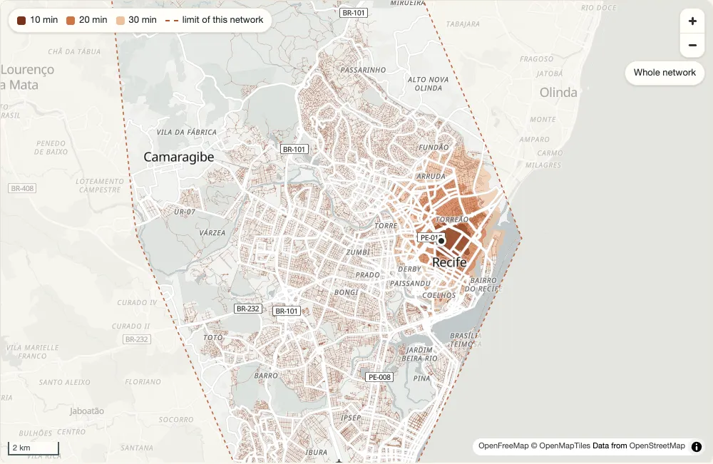

peabiru for JavaScript


The npm package peabiru computes travel-time matrices, accessibility,
minute-by-minute (expanded) and arrival-time matrices, detailed
itineraries, fares and Pareto frontiers, and isochrones on multimodal
networks built from an OpenStreetMap extract (.pbf), GTFS public
transport feeds (.zip) and, optionally, an elevation raster (.tif), by
walking, cycling, driving and public transport. Its routing engine is the
Rust core of peabiru compiled to WebAssembly: it runs in browsers, in
bundlers and in Node (18 or later), with no server and no Java, and gives
the numbers of the R and Python packages. It is a Rust port of Conveyal’s R5 routing engine.
Authorship. peabiru is an independent project. Its routing model is that of Conveyal’s R5, and its fare calculator and parts of its trip planner are translated from r5r (Ipea); both are MIT-licensed, and their notices are kept in
LICENSE-THIRD-PARTY. peabiru is not affiliated with or endorsed by Conveyal, Ipea or the r5r team. The port was written with the assistance of AI coding tools.
const ttm = await peabiru.travelTimeMatrix(network, points, points, {
mode: ["WALK", "TRANSIT"],
departureDatetime: "2019-05-13 14:00:00",
timeWindow: 10,
percentiles: [25, 50, 75],
seed: 42,
});
console.log(Object.keys(ttm).join(" "));
console.log(`${ttm.from_id.length} rows`);
for (let i = 0; i < 4; i++) {
console.log(ttm.from_id[i], ttm.to_id[i], ttm.travel_time_p25[i], ttm.travel_time_p50[i], ttm.travel_time_p75[i]);
}
The same engine is behind:
- the R package
peabiru(its documentation); - the Python package
peabiru(its documentation); - the Rust crate
peabiru-coreand the command-line tool (the Rust guide).
This guide covers the JavaScript API: getting started in Node and in a browser, the routing functions and the columns they return, detailed itineraries, fares, elevation, scenarios, inspecting a network and GTFS errors, threads and workers, bundlers, what differs from the R and Python packages, the comparison with r5r, and the API reference, generated from the package’s type declarations.
Status
On npm. The package covers
street matrices (walk, bicycle, car),
public transport matrices (any subset of the transit modes, reached and
left on foot, by bicycle or by car) with percentiles and Monte Carlo
draws, accessibility with five decay functions, expanded and arrival
matrices, isochrones, detailed itineraries (the fastest trip or the
alternatives), fares and Pareto frontiers, elevation, scenarios of car
speeds and traffic stress, and the functions that inspect a network and
its GTFS errors. What it does not support (a fare structure that names a
fare calculator instead of fare rules, writing results to files) throws
UnsupportedError; nothing is silently ignored.
The API may still change.
The examples
Every example in this guide is a file in site/js/examples/ of the
repository, included here verbatim, and so is the output shown under it.
node site/js/run_examples.mjs runs them all on the São Paulo sample
network of the Python package (python/peabiru/data/spo/), or on the sample data of Porto Alegre from
the r5r project where a timetabled feed is needed, together with
the examples of the API reference: the Node
examples with node, the browser examples in headless Chrome, as plain ES
modules and, with VITE set to a Vite executable, bundled by Vite. It
fails if any of them prints something other than the output shown here.
Credits
The routing model follows Conveyal’s R5 (MIT, © Conveyal), from which the routing logic is ported (see the comparison with r5r); the fare calculator and parts of the trip planner are translated from the Java code of r5r (MIT, © r5r contributors; developed at Ipea), on whose functions the interface is modelled; the exponential of the decay functions is translated from Apache Commons Math 3 (Apache-2.0). The sample network contains map data © OpenStreetMap contributors, under the Open Database License.
Getting started
Install
The package is on npm:
npm install peabiru
To build it from a clone of the repository instead, you need Rust, the
wasm32-unknown-unknown target and
wasm-pack:
rustup target add wasm32-unknown-unknown
cd peabiru-routing/js
sh build.sh # pkg/peabiru.js and pkg/peabiru_bg.wasm
node --test tests/*.test.mjs # optional: the package's tests
Then add that build to your project from the directory (npm links to it), or
from a tarball made with npm pack in js/ (a copy of the files that
would be published):
npm install /path/to/peabiru-routing/js
npm install /path/to/peabiru-routing/js/peabiru-<version>.tgz # after npm pack
The package is an ES module only (import, not require() before Node
22), with its TypeScript declarations in lib/index.d.ts. It needs Node 18
or later, or a browser with WebAssembly and ES modules.
Input data
A network is built from the bytes of one OpenStreetMap extract in PBF format and, for public transport, of any number of GTFS feeds (and, optionally, of an elevation raster). The package reads no files itself: you pass it the bytes, read from disk in Node, fetched or picked by the user in a browser.
The examples use the sample network of the Python package
(python/peabiru/data/spo/ in the repository): the streets around Avenida
Paulista, in São Paulo, the SPTrans frequency-based GTFS feed, and 27
points in spo_points.csv, with columns id, lon, lat and the
opportunity counts population, schools, jobs and healthcare. They
read the points with this small function (sample.mjs):
/**
* The rows of a CSV file of points (a header with id, lon, lat and any
* other columns; no quoted fields) as columns: `id` as strings, the
* others as numbers.
*/
export function parsePoints(text) {
const [header, ...lines] = text.trim().split(/\r?\n/);
const names = header.split(",");
const columns = Object.fromEntries(names.map((name) => [name, []]));
for (const line of lines) {
line.split(",").forEach((value, k) => {
columns[names[k]].push(names[k] === "id" ? value : Number(value));
});
}
return columns;
}
In Node
import { readFile } from "node:fs/promises";
import * as peabiru from "peabiru";
import { parsePoints } from "./sample.mjs";
const network = await peabiru.buildNetwork({
pbf: await readFile("spo_osm.pbf"),
gtfs: [{ name: "spo_gtfs.zip", data: await readFile("spo_gtfs.zip") }],
});
const points = parsePoints(await readFile("spo_points.csv", "utf8"));
const ttm = await peabiru.travelTimeMatrix(network, points, points, {
mode: ["WALK", "TRANSIT"],
departureDatetime: "2019-05-13 14:00:00",
timeWindow: 10,
percentiles: [25, 50, 75],
seed: 42,
});
console.log(Object.keys(ttm).join(" "));
console.log(`${ttm.from_id.length} rows`);
for (let i = 0; i < 4; i++) {
console.log(ttm.from_id[i], ttm.to_id[i], ttm.travel_time_p25[i], ttm.travel_time_p50[i], ttm.travel_time_p75[i]);
}
network.free();
from_id to_id travel_time_p25 travel_time_p50 travel_time_p75
729 rows
89a8100c00fffff 89a8100c00fffff 0 0 0
89a8100c00fffff 89a8100c007ffff 7 7 7
89a8100c00fffff 89a8100c077ffff 10 10 10
89a8100c00fffff 89a8100c03bffff 8 8 8
buildNetwork() loads the WebAssembly module the first time it is called,
reads the extract and the feeds, and builds the network in the module’s
memory, where it stays until network.free(). Every function that reads
or routes on a network returns a Promise. A matrix is an object of columns (from_id, to_id, and one
Int32Array per percentile), one row per origin and destination reached,
in the order of the origins: see Routing functions.
In a browser
The same code runs in a page, with fetch() instead of readFile(). With
nThreads above 1 the network is built in Web Workers and routing does not
block the page (see Threads and workers):
import * as peabiru from "peabiru";
import { parsePoints } from "./sample.mjs";
async function bytes(url) {
const response = await fetch(url);
if (!response.ok) throw new Error(`${url}: ${response.status}`);
return response.arrayBuffer();
}
const network = await peabiru.buildNetwork({
pbf: await bytes("spo_osm.pbf"),
gtfs: [{ name: "spo_gtfs.zip", data: await bytes("spo_gtfs.zip") }],
nThreads: 2, // two Web Workers; the page stays responsive
});
const points = parsePoints(await (await fetch("spo_points.csv")).text());
const ttm = await peabiru.travelTimeMatrix(network, points, points, {
mode: ["WALK", "TRANSIT"],
departureDatetime: "2019-05-13 14:00:00",
percentiles: [25, 50, 75],
seed: 42,
});
console.log(`${ttm.from_id.length} rows on ${network.workers} workers`);
for (let i = 0; i < 4; i++) {
console.log(ttm.from_id[i], ttm.to_id[i], ttm.travel_time_p50[i]);
}
network.free();
729 rows on 2 workers
89a8100c00fffff 89a8100c00fffff 0
89a8100c00fffff 89a8100c007ffff 7
89a8100c00fffff 89a8100c077ffff 10
89a8100c00fffff 89a8100c03bffff 8
Without a bundler, map the package name to its files with an import map
(here the package is in node_modules/peabiru/, served with the page; the
worker script and the .wasm file are found from lib/index.js, in lib/
and pkg/, so serve both directories):
<script type="importmap">
{ "imports": { "peabiru": "./node_modules/peabiru/lib/index.js" } }
</script>
Served as application/wasm, the module compiles while it downloads
(with another type it is compiled once downloaded). With Vite there is
nothing to configure: see Bundlers and loading the module.
Files that the user picks in an <input type="file"> are File objects,
whose bytes come from file.arrayBuffer():
/** Build a network from the files of an <input type="file" multiple>. */
async function networkFromFiles(files) {
const all = [...files];
const pbf = all.filter((f) => f.name.endsWith(".pbf"));
if (pbf.length !== 1) throw new Error("pick exactly one .pbf file");
const gtfs = all
.filter((f) => f.name.endsWith(".zip"))
.sort((a, b) => (a.name < b.name ? -1 : 1)) // the feeds load in this order
.map(async (f) => ({ name: f.name, data: await f.arrayBuffer() }));
return peabiru.buildNetwork({ pbf: await pbf[0].arrayBuffer(), gtfs: await Promise.all(gtfs) });
}
// <input id="files" type="file" multiple accept=".pbf,.zip">
// document.querySelector("#files").addEventListener("change", async (event) => {
// const network = await networkFromFiles(event.target.files);
// ...
// });
["spo_gtfs"] 654 stops
The GTFS feeds load in the order of the gtfs array; with more than one
feed that order can change a few results of expanded and arrival matrices
(see Coming from R or Python).
What the network holds
console.log(network.info());
console.log(await network.transitAvailability("2019-05-13"));
console.log("warnings of the build:", network.buildWarnings().length);
console.log("workers:", network.workers);
{
vertices: 2609,
edges: 5518,
elevation: 'NONE',
feeds: [ 'spo_gtfs' ],
stops: 654,
patterns: 36,
services: 6,
frequencies: true
}
{ services: 6, active: 3 }
warnings of the build: 0
workers: 0
transitAvailability() counts the services running on a date.
buildNetwork() throws when a GTFS feed has errors
of priority "HIGH"; getGtfsErrors() lists them. coreVersion() gives the version of the Rust core, once the
module is loaded:
// buildNetwork() loads the WebAssembly module itself; coreVersion() needs it loaded
await peabiru.init();
const versions = `package ${peabiru.version}, core ${peabiru.coreVersion()}`;
Routing functions
| Function | What it computes |
|---|---|
travelTimeMatrix() | travel times between every origin and destination |
accessibility() | cumulative or decay-weighted access to opportunities |
expandedTravelTimeMatrix() | travel times minute by minute, with a breakdown of each trip |
arrivalTravelTimeMatrix() | the latest trip that arrives by a given time |
Each takes the network, the origins, the destinations and an options object, and returns a Promise of an object of columns. The other functions have pages of their own: detailed itineraries, fares and Pareto frontiers, isochrones, and inspecting a network; elevation and scenarios change the travel times of all of them.
Arguments
The options are the arguments of the R and Python packages, with the
same defaults, in camelCase: departure_datetime is departureDatetime,
max_trip_duration is maxTripDuration, and so on (all of them are in the
API reference). An option name that is not one of
them is an error, so a typo does not go unnoticed.
- Points are columns
{ id, lon, lat }(arrays or typed arrays) or an array of{ id, lon, lat }objects. Foraccessibility()the destinations also hold the opportunity columns. Ids that are not strings are converted withString(), with a warning; points with missing coordinates are not routed, with a warning; duplicated ids are an error. - Dates and times are strings
"YYYY-MM-DD HH:MM:SS"(or withT, or without seconds), read as they are written: the clock time of the GTFS feeds. ADatealso works, but it is read in the local time zone of the JavaScript runtime, which is rarely the feeds’ time zone: prefer strings. - Frequency-based GTFS (
frequencies.txt) is routed with Monte Carlo draws: results are reproducible only with aseed. onWarningreceives the warnings of the call (by defaultconsole.warn);signaltakes anAbortSignalandnThreadsthe number of workers to use (see Threads and workers).
Results
Results are objects of columns, never arrays of row objects (a matrix can have millions of rows). The id columns are arrays of strings; the numbers are typed arrays:
| Function | Columns |
|---|---|
travelTimeMatrix() | from_id, to_id; one Int32Array travel_time_pXX per percentile (travel_time_p05, …), in whole minutes |
accessibility() | id, opportunity; percentile and cutoff (Int32Array; no cutoff with "fixed_exponential"); accessibility (Float64Array) |
expandedTravelTimeMatrix(), arrivalTravelTimeMatrix() | from_id, to_id, departure_time ("HH:MM:SS"), draw_number (Int32Array); with breakdown: true, access_time, wait_time, ride_time, transfer_time, egress_time (Float64Array, minutes); routes (strings); n_rides (Int32Array, with breakdown); total_time (Float64Array) |
Rows are origin-major, in the order of the inputs; pairs that are not
reached are left out. Missing values are
NA_INT32 (-2147483648) in the Int32Array columns,
NaN in the Float64Array columns and null in the string columns.
Street matrices
A network built from the .pbf alone routes on the streets. Walking,
cycling (with the cyclist’s highest level of traffic stress, maxLts) and
driving (with turn restrictions and turn costs):
const streets = await peabiru.buildNetwork({ pbf: await readFile("spo_osm.pbf") });
const walk = await peabiru.travelTimeMatrix(streets, points, points, {
mode: "WALK",
maxTripDuration: 15,
});
const bike = await peabiru.travelTimeMatrix(streets, points, points, {
mode: "BICYCLE",
bikeSpeed: 15,
maxLts: 3,
maxTripDuration: 15,
});
const car = await peabiru.travelTimeMatrix(streets, points, points, {
mode: "CAR",
maxTripDuration: 15,
});
// pairs that are not reached within maxTripDuration are left out
console.log(`walk: ${walk.from_id.length} pairs, bicycle: ${bike.from_id.length}, car: ${car.from_id.length}`);
walk: 234 pairs, bicycle: 641, car: 719
To find one pair, walk the rows; for many lookups, build a Map from the
ids once:
// the travel time from one point to another, by car
function travelTime(m, from, to) {
for (let i = 0; i < m.from_id.length; i++) {
if (m.from_id[i] === from && m.to_id[i] === to) return m.travel_time_p50[i];
}
return undefined; // not reached
}
console.log("car:", travelTime(car, "89a8100c00fffff", "89a8100c03bffff"), "min");
car: 2 min
The first street matrices of a mode on a network search the streets from every origin; once enough origins have been routed, the network builds a contraction hierarchy for that mode, keeps it, and later matrices use it. The results are the same either way; only the time changes.
Public transport matrices
mode: ["WALK", "TRANSIT"] walks to a stop, rides up to maxRides
vehicles and walks to the destination, for every minute of the departure
window (departureDatetime and the timeWindow minutes after it). Each
travel_time_pXX column is a percentile of the travel times over the
window and, for frequency-based trips, over the Monte Carlo draws:
const options = {
mode: ["WALK", "TRANSIT"],
departureDatetime: "2019-05-13 14:00:00",
timeWindow: 30,
percentiles: [10, 50, 90],
maxWalkTime: 20,
maxTripDuration: 30,
seed: 42,
};
const ttm = await peabiru.travelTimeMatrix(network, points, points, options);
// a percentile of the trips can be longer than maxTripDuration: NA there
let na = 0;
for (const t of ttm.travel_time_p90) if (t === peabiru.NA_INT32) na++;
console.log(`${ttm.from_id.length} pairs, ${na} of them NA at the 90th percentile`);
685 pairs, 55 of them NA at the 90th percentile
With a seed the draws repeat; without one, each call draws a new seed and
the results of a frequency-based feed change from call to call:
// the same seed gives the same results; without one, every call draws anew
const again = await peabiru.travelTimeMatrix(network, points, points, options);
const same = ttm.travel_time_p50.every((t, i) => t === again.travel_time_p50[i]);
console.log("same results with the same seed:", same);
same results with the same seed: true
Accessibility
accessibility() sums, for each origin, the opportunities of the
destinations (the columns named in opportunitiesColnames), weighted by a
decay function of the travel time: "step" (cumulative, within each
cutoff), "exponential", "fixed_exponential", "linear" or
"logistic":
// id, lon, lat and the opportunity counts: population, schools, jobs, healthcare
const points = parsePoints(await readFile("spo_points.csv", "utf8"));
const access = await peabiru.accessibility(network, points, points, {
opportunitiesColnames: ["jobs", "schools"],
mode: ["WALK", "TRANSIT"],
departureDatetime: "2019-05-13 14:00:00",
decayFunction: "step",
cutoffs: [15, 30],
seed: 42,
});
// one row per origin, opportunity, percentile and cutoff
console.log(Object.keys(access).join(" "));
for (let i = 0; i < 4; i++) {
console.log(access.id[i], access.opportunity[i], access.percentile[i], access.cutoff[i], access.accessibility[i]);
}
id opportunity percentile cutoff accessibility
89a8100c00fffff jobs 50 15 12452
89a8100c00fffff jobs 50 30 95249
89a8100c00fffff schools 50 15 1
89a8100c00fffff schools 50 30 4
const decayed = await peabiru.accessibility(network, points, points, {
opportunitiesColnames: "jobs",
mode: "WALK",
decayFunction: "logistic",
cutoffs: 20,
decayValue: 5,
});
console.log("jobs within about 20 min on foot, first origin:", decayed.accessibility[0].toFixed(1));
jobs within about 20 min on foot, first origin: 20362.8
Expanded and arrival matrices
expandedTravelTimeMatrix() gives one row per destination, departure
minute and draw instead of percentiles, and with breakdown: true the
parts of each trip. Times are minutes with one decimal:
// points can also be an array of {id, lon, lat} objects
const origin = [{ id: points.id[0], lon: points.lon[0], lat: points.lat[0] }];
const expanded = await peabiru.expandedTravelTimeMatrix(network, origin, points, {
mode: ["WALK", "TRANSIT"],
departureDatetime: "2019-05-13 14:00:00",
timeWindow: 5,
breakdown: true,
seed: 42,
});
console.log(Object.keys(expanded).join(" "));
// the first three trips that ride a bus
const rides = (m) => [...m.routes.keys()].filter((i) => m.routes[i] !== "[WALK]").slice(0, 3);
for (const i of rides(expanded)) {
const e = expanded;
console.log(e.to_id[i], e.departure_time[i], e.draw_number[i], e.routes[i],
`access ${e.access_time[i]} wait ${e.wait_time[i]} ride ${e.ride_time[i]}`,
`transfer ${e.transfer_time[i]} egress ${e.egress_time[i]} total ${e.total_time[i]}`);
}
from_id to_id departure_time draw_number access_time wait_time ride_time transfer_time egress_time routes n_rides total_time
89a8100c393ffff 14:00:00 1 2002-10 access 16.1 wait 1 ride 2.2 transfer 0 egress 2.5 total 21.8
89a8100c393ffff 14:00:00 2 2002-10 access 16.1 wait 1.4 ride 2.2 transfer 0 egress 2.5 total 22.2
89a8100c393ffff 14:02:00 1 2002-10 access 16.1 wait 1.2 ride 2.2 transfer 0 egress 2.5 total 22
arrivalTravelTimeMatrix() searches the departures back from
arrivalDatetime and keeps, for each pair, the latest trip that arrives in
time:
// the latest trip from each origin that arrives by 15:00
const arrival = await peabiru.arrivalTravelTimeMatrix(network, origin, points, {
mode: ["WALK", "TRANSIT"],
arrivalDatetime: "2019-05-13 15:00:00",
seed: 42,
});
for (const i of rides(arrival)) {
console.log(arrival.to_id[i], arrival.departure_time[i], arrival.routes[i], arrival.total_time[i]);
}
89a8100c393ffff 14:37:00 2002-10 22.1
89a8100c02fffff 14:37:00 METRÔ L1 21.6
89a8100c38bffff 14:27:00 4491-10 32.9
Both need public transport; with a street mode alone they throw
UnsupportedError.
Warnings and errors
const warnings = [];
const points = { id: [1, 2], lon: [-46.6290, -46.6321], lat: [-23.5563, -23.5577] };
await peabiru.travelTimeMatrix(network, points, points, {
mode: "WALK",
onWarning: (message) => warnings.push(message), // default: console.warn
});
console.log(warnings);
for (const options of [
{ mode: "WALK", maxTripDurations: 30 }, // a typo
{ mode: "WALK", outputDir: "results" }, // writing results to files
]) {
try {
await peabiru.travelTimeMatrix(network, ids, ids, options);
} catch (e) {
console.log(`${e.name}: ${e.message}`);
if (e instanceof peabiru.UnsupportedError) console.log(" (an UnsupportedError)");
}
}
[
"'origins.id' forcefully cast to character.",
"'destinations.id' forcefully cast to character."
]
TypeError: unknown option 'maxTripDurations'
UnsupportedError: Writing results to 'outputDir' is not supported by peabiru.
(an UnsupportedError)
What peabiru does not do throws
UnsupportedError: outputDir, expanded and
arrival matrices by a street mode alone, and a fare structure that names a
fare calculator (a type) instead of fare rules.
verbose and progress are checked; peabiru prints nothing.
Detailed itineraries
detailedItineraries() gives the legs of
each trip between pairs of origins and destinations: each walk, ride by
bicycle or car, and each public transport ride, with its duration, waiting
time, distance, route and line.
The examples on this page use the sample data of Porto Alegre from the r5r project, whose GTFS feeds have timetables (itineraries by public transport need them: a network with frequency-based trips is an error) and only have service in the afternoon, hence the 14:00 departure. The files are downloaded once into the temporary directory (about 2 MB) by a small helper:
const POA = "https://raw.githubusercontent.com/ipea/r5r/v2.5.0/r-package/inst/extdata/poa/";
/** The bytes of a file of the Porto Alegre sample, downloaded the first time. */
export async function poaFile(name) {
const dir = join(tmpdir(), "peabiru-poa");
const path = join(dir, name);
if (!existsSync(path)) {
const response = await fetch(POA + name);
if (!response.ok) throw new Error(`${POA + name}: HTTP ${response.status}`);
mkdirSync(dirname(path), { recursive: true });
writeFileSync(`${path}.part`, new Uint8Array(await response.arrayBuffer()));
renameSync(`${path}.part`, path);
}
return readFile(path);
}
// the feeds in the order macOS lists the sample directory
const network = await peabiru.buildNetwork({
pbf: await poaFile("poa_osm.pbf"),
gtfs: [
{ name: "poa_trensurb.zip", data: await poaFile("poa_trensurb.zip") },
{ name: "poa_eptc.zip", data: await poaFile("poa_eptc.zip") },
],
});
const points = parsePoints((await poaFile("poa_points_of_interest.csv")).toString());
const pick = (...k) => ({ id: k.map((i) => points.id[i]), lon: k.map((i) => points.lon[i]), lat: k.map((i) => points.lat[i]) });
The fastest trip
Origins and destinations are paired row by row (a single origin or
destination is repeated to match the other, with a warning). Each pair gets
its fastest itinerary (shortestPath: true, the default): the trip by the
street mode alone, or the fastest public transport trip over the departure
window (departureDatetime and the timeWindow minutes after it),
whichever is faster. Pairs without an itinerary have no rows.
// paired row by row: the first origin with the first destination, and so on
const origins = pick(0, 1, 2);
const destinations = pick(3, 4, 5);
const trips = await peabiru.detailedItineraries(network, origins, destinations, {
mode: ["WALK", "TRANSIT"],
departureDatetime: "2019-05-13 14:00:00",
});
console.log(trips.type, trips.features.length, "legs");
const legs = trips.features.map((f) => f.properties);
show(legs, ["from_id", "to_id", "option", "departure_time", "total_duration", "segment", "mode", "segment_duration", "wait", "distance", "route"]);
const line = trips.features[2].geometry;
console.log(line.type, line.coordinates.length, "points, from", line.coordinates[0]);
FeatureCollection 7 legs
from_id to_id option departure_time total_duration segment mode segment_duration wait distance route
public_market santa_casa_hospital 1 14:00:00 13.1 1 WALK 13.1 0 792
bus_central_station townhall 1 14:06:00 10.9 1 WALK 3.6 0 206
bus_central_station townhall 1 14:06:00 10.9 2 BUS 4 1.4 1475 2441
bus_central_station townhall 1 14:06:00 10.9 3 WALK 1.9 0 111
gasometer_museum piratini_palace 1 14:01:00 12.6 1 WALK 4.1 0 224
gasometer_museum piratini_palace 1 14:01:00 12.6 2 BUS 4.1 1.6 1001 C1
gasometer_museum piratini_palace 1 14:01:00 12.6 3 WALK 2.8 0 168
LineString 31 points, from [ -51.21991736742854, -30.02369764232731 ]
The result is a GeoJSON FeatureCollection with one LineString feature
per leg (coordinates [lon, lat], WGS 84); the properties are the row’s
columns. With dropGeometry: true it is an array of the rows themselves.
The columns:
| Column | |
|---|---|
from_id, from_lat, from_lon, to_id, to_lat, to_lon | the pair |
option | the itinerary, from 1 |
departure_time | "HH:MM:SS", when the itinerary leaves the origin |
total_duration, total_distance | of the itinerary: minutes (one decimal), metres |
total_fare | with a fareStructure only |
segment | the leg, from 1 |
mode | "WALK", "BICYCLE", "CAR", or the ride’s mode ("BUS", "RAIL", …) |
cumulative_fare | with a fareStructure only: what was paid up to the end of the leg |
segment_duration, wait, distance | of the leg: minutes, minutes, metres |
route | the GTFS route_id of a ride; empty for a street leg |
osm_id_list, edge_id_list, board_stop_id, alight_stop_id | with osmLinkIds: true only (see below) |
How the lines are drawn:
- a street leg’s line holds the whole of its first and last street segments, not only the parts walked or driven; the leg from the last stop ends at the destination itself;
- a ride follows the GTFS shape of its trip pattern, or straight lines between its stops when the feed has no shapes;
- a walk between stops is routed again on the streets for its line and distance; its duration is the one the public transport search used.
Alternatives
With shortestPath: false the result lists the itineraries the
multi-criteria router (McRAPTOR) keeps over the departure window, one per
sequence of routes, with the trip by the street mode alone first:
const alternatives = (suboptimalMinutes) =>
peabiru.detailedItineraries(network, pick(1), pick(4), {
mode: ["WALK", "TRANSIT"],
departureDatetime: "2019-05-13 14:00:00",
shortestPath: false, // McRAPTOR's alternatives, one per sequence of routes
suboptimalMinutes,
dropGeometry: true, // plain rows, no GeoJSON
});
const options = await alternatives(0);
for (const rows of byOption(options)) {
console.log(`option ${rows[0].option}: ${rows[0].departure_time}, ${rows[0].total_duration} min, ${via(rows)}`);
}
const wider = await alternatives(3);
console.log(`with suboptimalMinutes: 3, ${new Set(wider.map((r) => r.option)).size} options`);
option 1: 14:00:00, 23.4 min, WALK
option 2: 14:04:18, 10.8 min, WALK > BUS 255 > WALK
option 3: 14:05:51, 11 min, WALK > BUS 2441 > WALK
option 4: 14:02:02, 12 min, WALK > BUS 346 > WALK
option 5: 14:09:26, 12.2 min, WALK > BUS 2821 > WALK
option 6: 14:00:43, 13.1 min, WALK > BUS 397 > WALK
option 7: 14:06:46, 13.5 min, WALK > BUS 525 > WALK
with suboptimalMinutes: 3, 14 options
suboptimalMinutes widens the search: at every stop, McRAPTOR also keeps
the states that arrive up to that many minutes after the best one there, so
more sequences of routes survive. It does not cap an alternative’s
duration at the best plus suboptimalMinutes, since each departure minute
of the window is searched on its own. It must be 0 with
shortestPath: true and with a fareStructure.
The options are numbered in this order: the trip by the street mode
alone first, then by the number of legs, then by duration. The first option
is then not the fastest when a trip with fewer legs is slower (on Porto
Alegre with suboptimalMinutes: 10, a pair had 102 options, the first of
60.4 minutes and the fastest of 53.3).
Every origin to every destination
allToAll: true routes every origin to every destination instead of
pairing them:
const all = await peabiru.detailedItineraries(network, pick(0, 1), pick(3, 4, 5), {
mode: "BICYCLE",
departureDatetime: "2019-05-13 14:00:00",
allToAll: true, // 2 origins x 3 destinations
dropGeometry: true,
});
show(all, ["from_id", "to_id", "mode", "total_duration", "total_distance"]);
from_id to_id mode total_duration total_distance
public_market santa_casa_hospital BICYCLE 6.6 752
public_market townhall BICYCLE 1.3 185
public_market piratini_palace BICYCLE 7.5 1118
bus_central_station santa_casa_hospital BICYCLE 16.8 1220
bus_central_station townhall BICYCLE 23.1 1510
bus_central_station piratini_palace BICYCLE 24.1 2602
The OpenStreetMap ways of a leg
osmLinkIds: true (which needs the geometry, so not with dropGeometry)
adds four properties: osm_id_list, the OpenStreetMap way ids of a street
leg’s edges, and edge_id_list, the indices of those edges in the network
(the edge_index of streetNetworkToSf()), both as text
"[id1, id2, ...]" ("[]" for a ride; consecutive edges on a roundabout
give only their first ids, and the connectors to stops none); and, for a
ride, board_stop_id and alight_stop_id, "<feed id>:<stop_id>" (empty
for street legs).
const walk = await peabiru.detailedItineraries(network, pick(0), pick(3), {
mode: "WALK",
departureDatetime: "2019-05-13 14:00:00",
osmLinkIds: true, // needs the geometry
});
const leg = walk.features[0].properties;
console.log("OpenStreetMap ways:", leg.osm_id_list);
console.log("street edges:", leg.edge_id_list);
OpenStreetMap ways: [237136949, 244633510, 362303079, 244757080, 244633514, 477174192, 326309693, 130584734, 287533432, 451653170, 451653568, 37779162, 412174594, 318074943, 208354790]
street edges: [28012, 29003, 29001, 39926, 29188, 29008, 29010, 29012, 49702, 49704, 34557, 13363, 31964, 46208, 46944, 8715, 40935, 33846, 33848, 18324]
Fares
With a fare structure, trips are routed with fares (only those
up to maxFare, Infinity by default) and the rows get total_fare and
cumulative_fare:
const fares = await peabiru.setupFareStructure(network, 4.8); // every ride 4.80, a transfer too
const priced = await peabiru.detailedItineraries(network, pick(1), pick(4), {
mode: ["WALK", "TRANSIT"],
departureDatetime: "2019-05-13 14:00:00",
fareStructure: fares,
shortestPath: false,
dropGeometry: true,
});
for (const rows of byOption(priced)) {
const paid = rows.map((r) => r.cumulative_fare).join(", ");
console.log(`option ${rows[0].option}: ${rows[0].total_duration} min, fare ${rows[0].total_fare} (${via(rows)}; paid after each leg: ${paid})`);
}
option 1: 23.4 min, fare 0 (WALK; paid after each leg: 0)
option 2: 10.8 min, fare 4.8 (WALK > BUS 255 > WALK; paid after each leg: 0, 4.8, 4.8)
option 3: 11 min, fare 4.8 (WALK > BUS 2441 > WALK; paid after each leg: 0, 4.8, 4.8)
option 4: 12 min, fare 4.8 (WALK > BUS 346 > WALK; paid after each leg: 0, 4.8, 4.8)
option 5: 12.2 min, fare 4.8 (WALK > BUS 2821 > WALK; paid after each leg: 0, 4.8, 4.8)
option 6: 13.1 min, fare 4.8 (WALK > BUS 397 > WALK; paid after each leg: 0, 4.8, 4.8)
option 7: 13.5 min, fare 4.8 (WALK > BUS 525 > WALK; paid after each leg: 0, 4.8, 4.8)
Car egress and turn restrictions
With modeEgress: "CAR", the egress is searched backwards from the
destination, and a turn restriction with two or more via ways can be read
in either order of those ways. peabiru fixes the order: every pair gets
the itineraries of a freshly built network routing that pair alone with
one thread, whatever the other pairs, the threads or the earlier calls,
and a warning, once per call (onWarning), names the pairs whose
itineraries the other order of those via ways would change (on Porto
Alegre, about 1 pair in 200). Rides along GTFS shapes are cut by
shape_dist_traveled where the feed has it.
The trips for which the fastest-path search cannot rebuild a path are routed again with McRAPTOR.
Trip options
To see every trip worth considering between two points, faster or cheaper, with fewer transfers or less walking, and not only the fastest one, see tripOptions(), peabiru’s own multi-criteria planner: Trip options.
Fares
A fare structure describes how much each ride costs and which transfers
are discounted; the routing functions take it as
fareStructure. With one, public transport is
routed with the multi-criteria router (McRAPTOR), which keeps at each stop
the trips that are faster or cheaper than the others, over
timeWindow * drawsPerMinute departure times sampled in the window.
| Function | What it does |
|---|---|
setupFareStructure() | a structure where every route, type and transfer costs the same |
readFareStructure() | a structure from the bytes of a .zip file |
writeFareStructure() | the bytes of a .zip file, the same format in the R and Python packages |
paretoFrontier() | the travel time at each fare cutoff where it changes |
The structure is an object with its tables as objects of columns:
fares_per_type (one row per fare type), fares_per_transfer (the fare of
two rides together, for the pairs of types with a discount) and
fares_per_route (the fare type of each GTFS route, matched by agency_id
and route_id; a route missing from it is an error).
// every route, fare type and transfer costs 4.40; then two rides together 6.60
const fares = await peabiru.setupFareStructure(network, 4.4);
fares.fares_per_transfer.fare = fares.fares_per_transfer.fare.map(() => 6.6);
console.log("fare types:", fares.fares_per_type.type.join(", "));
console.log("routes:", fares.fares_per_route.route_id.length);
fareStructure and maxFare (the highest fare of a trip) go to
travelTimeMatrix(), accessibility() and detailedItineraries(), whose
rows then get total_fare and cumulative_fare:
const options = {
mode: ["WALK", "TRANSIT"],
departureDatetime: "2019-05-13 14:00:00",
seed: 42,
fareStructure: fares,
};
const ttm = await peabiru.travelTimeMatrix(network, points, points, { ...options, drawsPerMinute: 1, maxFare: 6.6 });
console.log(`${ttm.from_id.length} pairs within 6.60`);
const frontier = await peabiru.paretoFrontier(network, points, points, { ...options, fareCutoffs: [0, 4.4, 6.6] });
console.log(`${frontier.from_id.length} rows; cutoffs as R5 reads them:`, [...new Set(frontier.monetary_cost)].join(", "));
fare types: SUBWAY, BUS, RAIL
routes: 19
729 pairs within 6.60
729 rows; cutoffs as R5 reads them: 0
read back the same: true
In this sample, whose GTFS is frequency-based, the fare router finds no trip faster than walking (the results are the walking times), so the frontier has one row per pair. With scheduled feeds, such as the Porto Alegre sample, the frontier lists the faster trips that cost more.
// the bytes of a .zip file, as the R and Python packages write it
const bytes = peabiru.writeFareStructure(fares);
const back = peabiru.readFareStructure(bytes);
console.log("read back the same:", JSON.stringify(back) === JSON.stringify(fares));
monetary_cost is the cutoff as the router reads it, a 32-bit float (4.4 is
4.400000095367432).
Trip options
To see every trip worth considering between two points, faster or cheaper, with fewer transfers or less walking, and not only the fastest one, see tripOptions(), peabiru’s own multi-criteria planner: Trip options.
Trip options
tripOptions() is a multi-criteria trip planner:
for each origin and destination it gives every trip worth considering, the
ones that no other trip beats on all the chosen criteria at once. Where
detailedItineraries() answers “what is the fastest way there?”,
tripOptions() answers “what are my choices?”: faster but dearer, cheaper
but slower, fewer transfers, less walking. It is the same function as
trip_options() in R and Python, with the same results.
Not dominated
A trip dominates another when it is no worse on every chosen criterion and better on at least one. The criteria are
"TIME": door-to-door minutes from the departure minute, waits included;"FARE": the fare by a fare structure (see Fares);"TRANSFERS": rides minus one; a trip without public transport has 0, as many as a trip with a single ride;"WALK": minutes on foot: the access and egress legs when they are walked, and the walks between stops (a bicycle or car leg counts 0).
By default all four are used with a fare structure, all but "FARE"
without one. At each departure minute of the window the options are the
set of trips not dominated, with one trip per combination of values.
The search is exact, to the second. What is returned is then compared at
the resolution the values are read at: total time to a tenth of a minute,
as it is reported, and walking to the whole minute (rounded half up;
walkResolution sets the step in seconds, and 1 compares the exact seconds). Of the
trips of a minute, one is left out when another is no worse on every
criterion in those terms and better on one, or equal on all of them and
better in exact terms (less total time, then fewer transfers, less walking,
a lower fare). Without this, a trip that is slower, dearer and with more
transfers would be returned only because it walks a few seconds less. The
values reported stay exact. Rounding cannot make a trip look better than
one that beats it to the second, so the result is the same as comparing
every trip at that resolution.
The trips follow the rules of the other functions (the same access and egress
searches, transfers between stops and boarding rules as
detailedItineraries()), so the times agree with the other functions.
The example downloads the sample data of Porto Alegre from the r5r project, and its fare structure, once into the temporary directory:
// the feeds in the order macOS lists the sample directory
const network = await peabiru.buildNetwork({
pbf: await poaFile("poa_osm.pbf"),
gtfs: [
{ name: "poa_trensurb.zip", data: await poaFile("poa_trensurb.zip") },
{ name: "poa_eptc.zip", data: await poaFile("poa_eptc.zip") },
],
});
const fares = peabiru.readFareStructure(await poaFile("fares/fares_poa.zip"));
const origin = { id: ["89a90128053ffff"], lon: [-51.1863771572777], lat: [-30.0722552482611] };
const destination = { id: ["89a90129c9bffff"], lon: [-51.1733521719011], lat: [-30.0511737750423] };
const departureDatetime = "2019-05-13 14:00:00";
Time and fare
const res = await peabiru.tripOptions(network, origin, destination, {
departureDatetime, criteria: ["TIME", "FARE"], fareStructure: fares,
});
show(res.options, ["option", "total_time", "fare", "transfers", "walk_time", "departure_time", "n_departures", "description"]);
option total_time fare transfers walk_time departure_time n_departures description
1 30.8 7.2 1 16.8 14:05:00 5 WALK > BUS T4 > BUS T1D > WALK
2 35.1 4.8 0 24.7 14:05:00 8 WALK > BUS T4 > WALK
3 35.8 7.2 1 20.4 14:00:00 5 WALK > BUS T11 > BUS T1D > WALK
4 42.1 4.8 0 33.8 14:07:00 2 WALK > BUS T4 > WALK
5 57.7 0 0 57.7 14:00:00 10 WALK
Each row is an option: trips with the same street modes, the same routes
between the same stops, and the same fare, transfers and minutes on foot,
found at n_departures of the window’s minutes. Its total time changes with
the minute (the wait at the start does), so the row reports the trip of its
best minute, departure_time. Over the whole window an option can look
dominated by another that was not available at its own minutes;
byDeparture: true adds the frontier of every minute:
const minutes = await peabiru.tripOptions(network, origin, destination, {
departureDatetime, timeWindow: 3, criteria: ["TIME", "FARE"], fareStructure: fares,
byDeparture: true, itineraries: false,
});
show(minutes.departures, ["option", "departure_time", "arrival_time", "total_time"]);
option departure_time arrival_time total_time
1 14:01:00 14:35:48 34.8
1 14:02:00 14:35:48 33.8
2 14:00:00 14:35:48 35.8
3 14:00:00 14:40:03 40.1
3 14:01:00 14:40:03 39.1
3 14:02:00 14:40:03 38.1
4 14:00:00 14:57:40 57.7
4 14:01:00 14:58:40 57.7
4 14:02:00 14:59:40 57.7
All four criteria and the legs
The result is { options, itineraries, departures }. The legs of each
option are in itineraries, in the format of detailedItineraries() and
keyed by from_id, to_id and option (a GeoJSON FeatureCollection, or
plain rows with dropGeometry: true); itineraries: false skips them, and
departures is null without byDeparture.
const all = await peabiru.tripOptions(network, origin, destination, {
departureDatetime, fareStructure: fares, dropGeometry: true,
});
console.log(`${all.options.length} options with the four criteria; the legs of the first:`);
show(all.itineraries.filter((l) => l.option === 1), ["segment", "mode", "cumulative_fare", "segment_duration", "wait", "distance", "route"]);
4 options with the four criteria; the legs of the first:
segment mode cumulative_fare segment_duration wait distance route
1 WALK 0 10.9 0 694
2 BUS 4.8 7.4 1.2 2113 T4
3 BUS 7.2 2.7 2.9 1392 T1D
4 WALK 7.2 5.8 0 350
maxOptions keeps the first options of each pair, and maxFare and
maxTripDuration leave out the trips beyond them. With a pool of workers
(nThreads in buildNetwork()) the pairs are shared out and the result is
the same.
Fares are not additive
A fare is not the sum of its rides: a transfer within the time allowance is discounted, some types have unlimited transfers, a cap may apply. Two partial trips are only compared on fare when one is at least as cheap for every way both can continue; the comparison makes no assumption about the fare structure. This exactness has a price: partial trips that could still get a discount are kept apart until they cannot, which makes the fare criterion the slowest one.
Frequency-based routes
GTFS frequencies.txt gives a headway, not departure times. The other
functions draw random departures (Monte Carlo); tripOptions() does not: a
frequency-based vehicle is boarded at its expected time, half a headway
after the traveller is ready to board (or after the period starts), within
the period, and with exact_times = 1 at the first scheduled departure.
The results do not change from call to call, there is no seed, and they
differ on purpose from the results of the draws.
Compared with the other functions
paretoFrontier()gives, for each fare cutoff, the percentiles of the travel time over Monte Carlo draws of departure times: a summary of time against budget, without the trips.detailedItineraries()gives the fastest trip, or withshortestPath: falsethe alternatives (one per sequence of routes).tripOptions()gives the trade-offs themselves, trip by trip, with their legs. Withcriteria: ["TIME"]andtimeWindow: 1, its first option has the total time ofdetailedItineraries()’s fastest trip for that minute.
Facility location
Travel times say how well a place is served today. locateFacilities()
turns the question around: given the people to serve and the places where a
facility could open, where should the next ones go? floatingCatchment()
measures the other side of access, supply against the demand that competes
for it. Both work on the travel times of the network, by any mode; they are
peabiru’s own functions, the same as locate_facilities() and
floating_catchment() in R and Python, with the same results.
The four models
locateFacilities(network, demand, candidates, options) takes the demand
points (with a weight each: residents, pupils, patients), the candidate
sites and, in existing, the facilities already open, and solves one of
four classic models:
model | question | objective |
|---|---|---|
"max_cover" | with nFacilities new facilities, how many people can be within cutoff minutes of one? | demand covered (to maximise) |
"set_cover" | how few facilities put everyone within cutoff minutes? | number of new sites |
"p_median" | where do nFacilities facilities make the average trip shortest? | demand-weighted minutes to the nearest facility |
"p_center" | where do they make the worst trip shortest? | minutes of the demand point farthest from its nearest facility |
A demand point is covered by a site at most cutoff minutes away (the
cutoff included). The existing facilities count first: only the demand
they leave uncovered, or the travel time they leave, drives the choice of
the new sites, and they are never closed or moved.
A worked example: two new schools
The sample network has 27 points with their population; six of them have a school. Where would two more schools put the most residents within a 12-minute walk of one?
// id, lon, lat, population and the opportunity counts (schools among them)
const points = parsePoints(await readFile("spo_points.csv", "utf8"));
// the rows of a table of columns where `keep(i)` holds
const rows = (table, keep) => Object.fromEntries(
Object.entries(table).map(([name, column]) => [name, column.filter((_, i) => keep(i))]),
);
const schools = rows(points, (i) => points.schools[i] > 0);
const others = rows(points, (i) => points.schools[i] === 0);
// two new schools, so that the most residents are within a 12-minute walk
const found = await peabiru.locateFacilities(network, points, others, {
existing: schools,
model: "max_cover",
nFacilities: 2,
cutoff: 12,
demandColname: "population",
mode: "WALK",
});
found.sites.id.forEach((id, k) => {
console.log(id, found.sites.order[k], found.sites.marginal[k], found.sites.cumulative[k]);
});
const s = found.summary;
const pct = (x) => `${(100 * x / s.total_demand).toFixed(1)}%`;
console.log(`covered today: ${s.covered_before} of ${s.total_demand} residents (${pct(s.covered_before)})`);
console.log(`greedy: ${s.objective_greedy}; after ${s.n_swaps} swap: ${s.covered} (${pct(s.covered)})`);
89a8100c03bffff 1 5658 43534
89a8100c383ffff 2 2683 46217
covered today: 37876 of 46273 residents (81.9%)
greedy: 46040; after 1 swap: 46217 (99.9%)
The result has four parts, each a table as an object of columns (and
summary, an object of numbers). sites lists the new sites by what each
adds: marginal is the demand it newly covers and cumulative the demand
covered so far, existing schools included. candidates has one row per
candidate with its potential: the residents not covered today that a
school there would cover alone. It is the map to draw before choosing
anything, since it shows every good place and not only the winners:
// what a school at each candidate would cover alone: the four best
const order = [...found.candidates.id.keys()].sort((a, b) => found.candidates.potential[b] - found.candidates.potential[a]);
for (const j of order.slice(0, 4)) {
console.log(found.candidates.id[j], found.candidates.potential[j], found.candidates.chosen[j]);
}
89a8100c033ffff 5764 false
89a8100c03bffff 5658 true
89a8100c007ffff 4829 false
89a8100c00fffff 3936 false
The candidate with the largest potential is not in the solution: the two
sites chosen overlap less with each other than it does with either. That is
the difference between ranking sites one by one and choosing a set.
demand has one row per demand point: its weight, the nearest open
facility (facility_id), the minutes to it (travel_time) and whether it
is covered.
How the models are solved
By heuristics, with no integer programming solver:
- Greedy construction. Sites are opened one at a time, each the one
that improves the objective most given the ones already open. For
maximal covering this covers at least 63% (1 - 1/e) of the most that any
choice of
nFacilitiessites could cover of the demand not covered today (Nemhauser, Wolsey and Fisher, 1978); in practice it is usually much closer. - Vertex substitution (
swap: true, the default; Teitz and Bart, 1968). An open new site is swapped for a closed candidate while that improves the objective, taking the best swap of all at each step. The result is never worse than the greedy one, andsummaryreports both (objective_greedy,objective,n_swaps).
In the example the greedy pair covers 46,040 residents and one swap takes it to 46,217, which is the optimum: an exhaustive search over the 210 pairs of candidates finds nothing better. That is not guaranteed in general; the solutions are good and reproducible, not proven optimal.
Details by model:
"set_cover"opens the site that covers the most demand points not yet covered until every point some site can cover is covered, then drops the sites the others make redundant."p_center"compares the largest travel time and, on ties, the demand-weighted sum, in the greedy step and in the swaps.- In
"set_cover"and"p_center"a point with weight 0 is not demand, and the others count the same whatever their weight. - In
"p_median"and"p_center", a demand point that reaches no open facility withinmaxTripDurationis chargedunreachableTimeminutes (by default twice the longest travel time of the table). A point that no site at all can serve is left out of the objective and reported insummary.unservable_demand. - Ties go to the candidate listed first.
The travel times are routed by the network’s workers, like any matrix; the
solver itself runs on the calling thread and is not interrupted by
signal.
The other models
const cover = await peabiru.locateFacilities(network, points, points, {
model: "set_cover", cutoff: 10, demandColname: "population",
});
console.log(`set_cover: ${cover.sites.id.length} sites put everyone within 10 minutes`);
for (const model of ["p_median", "p_center"]) {
const r = await peabiru.locateFacilities(network, points, points, {
model, nFacilities: 2, demandColname: "population", maxTripDuration: 60,
});
let [sum, total, longest] = [0, 0, 0];
r.demand.travel_time.forEach((t, i) => {
sum += r.demand.demand[i] * t;
total += r.demand.demand[i];
longest = Math.max(longest, t);
});
console.log(`${model}: ${r.sites.id.join(", ")}; mean ${(sum / total).toFixed(1)} min, longest ${longest} min`);
}
set_cover: 7 sites put everyone within 10 minutes
p_median: 89a8100c027ffff, 89a8100c03bffff; mean 9.7 min, longest 32 min
p_center: 89a8100c02fffff, 89a8100c067ffff; mean 13.3 min, longest 19 min
The p-median pair gives the shorter average and the p-center pair the
shorter worst case: the two models answer different questions. Any mode
works, since the travel times come from travelTimeMatrix(): pass mode,
departureDatetime and any other routing option (all but percentiles,
which is percentile here, and outputDir).
Supply against demand: the floating catchment area
Being near a school is not the same as having a place in it.
floatingCatchment(network, demand, supply, options) computes the two-step
floating catchment area (Luo and Wang, 2003): each facility’s supply is
divided by the demand within its catchment, and each demand point adds up
the ratios of the facilities within its catchment. The result is supply per
unit of demand at each demand point: here, schools per resident within a
20-minute walk.
// schools per resident within a 20-minute walk
const fca = await peabiru.floatingCatchment(network, points, schools, {
cutoff: 20,
demandColname: "population",
supplyColname: "schools",
mode: "WALK",
});
fca.supply.id.forEach((id, j) => console.log(id, fca.supply.supply[j], fca.supply.catchment_demand[j]));
const per10k = Array.from(fca.demand.accessibility, (a) => 10000 * a);
console.log(`schools per 10,000 residents: from ${Math.min(...per10k).toFixed(2)} to ${Math.max(...per10k).toFixed(2)}`);
let shared = 0;
fca.demand.accessibility.forEach((a, i) => { shared += a * fca.demand.demand[i]; });
console.log(`shared out: ${shared.toFixed(1)} schools`);
89a8100c077ffff 1 22033
89a8100c1dbffff 2 17501
89a8100c39bffff 1 10593
89a8100c1cbffff 1 21263
89a8100c153ffff 1 22664
89a8100c14fffff 1 11967
schools per 10,000 residents: from 0.45 to 3.34
shared out: 7.0 schools
The index shares out the supply: the sum over the demand points of demand
times accessibility is the supply of the facilities that have any demand
in their catchment.
With decayFunction: "step" a pair counts in full up to cutoff minutes
and not at all beyond. Any other decay function gives the enhanced form
(Luo and Qi, 2009), in which nearer pairs weigh more, in both steps. The
functions and their decayValue are those of accessibility(); the weight
falls continuously with travel time, where Luo and Qi used a few
travel-time zones.
From a table of travel times
Both functions take a table of travel times in travelTimes instead of a
network: from_id (demand point), to_id (site) and the minutes in
travel_time_pXX or travel_time, as travelTimeMatrix() returns it. A
pair that is absent is unreachable. The points then need only their id.
// the same from a table of travel times: no network, and only the ids
const sites = { id: [...schools.id, ...others.id], lon: [...schools.lon, ...others.lon], lat: [...schools.lat, ...others.lat] };
const times = await peabiru.travelTimeMatrix(network, points, sites, { mode: "WALK", maxTripDuration: 12 });
const again = await peabiru.locateFacilities(null, { id: points.id, population: points.population }, { id: others.id }, {
existing: { id: schools.id },
model: "max_cover",
nFacilities: 2,
cutoff: 12,
demandColname: "population",
travelTimes: times,
});
console.log(again.sites.id.join(" ") === found.sites.id.join(" "));
true
What the models do not see
The models choose sites by travel time and demand alone. They do not know the capacity or the cost of a facility, whether land is available at a candidate site, the demand that comes from outside the study area, or how well the people already covered are served. Maximal covering treats 11 minutes and 1 minute alike, and p-median may leave a few people very far to shorten the average: comparing two models on the same data is often more informative than either alone.
References
- Church, R. and ReVelle, C. (1974). The maximal covering location problem. Papers of the Regional Science Association, 32, 101-118. doi:10.1007/BF01942293
- Hakimi, S. L. (1964). Optimum locations of switching centers and the absolute centers and medians of a graph. Operations Research, 12(3), 450-459. doi:10.1287/opre.12.3.450
- Luo, W. and Qi, Y. (2009). An enhanced two-step floating catchment area (E2SFCA) method for measuring spatial accessibility to primary care physicians. Health & Place, 15(4), 1100-1107. doi:10.1016/j.healthplace.2009.06.002
- Luo, W. and Wang, F. (2003). Measures of spatial accessibility to health care in a GIS environment: synthesis and a case study in the Chicago region. Environment and Planning B: Planning and Design, 30(6), 865-884. doi:10.1068/b29120
- Nemhauser, G. L., Wolsey, L. A. and Fisher, M. L. (1978). An analysis of approximations for maximizing submodular set functions - I. Mathematical Programming, 14, 265-294. doi:10.1007/BF01588971
- Teitz, M. B. and Bart, P. (1968). Heuristic methods for estimating the generalized vertex median of a weighted graph. Operations Research, 16(5), 955-961. doi:10.1287/opre.16.5.955
- Toregas, C., Swain, R., ReVelle, C. and Bergman, L. (1971). The location of emergency service facilities. Operations Research, 19(6), 1363-1373. doi:10.1287/opre.19.6.1363
Elevation
With an elevation raster, walking and cycling times get slope costs.
Pass the bytes of the GeoTIFF file as tif to
buildNetwork(), and choose the cost function with
elevation:
"TOBLER"(the default): Tobler’s hiking function;"MINETTI": Minetti’s energy cost of walking;"NONE": the raster is read but no slope cost is applied.
Case does not matter. Without tif the function is "NONE", whatever
elevation says. Each directed street edge gets one factor (the
function averaged over samples every 10 m along it), which multiplies the
time of walking or cycling along the whole edge; driving times never
change.
The rasters in these examples are synthetic hills over the São Paulo sample, made for the tests of the package, not measured elevations.
const tif = await readFile("spo_hills.tif"); // EPSG:4326, one band, metres
const flat = await peabiru.buildNetwork({ pbf });
const tobler = await peabiru.buildNetwork({ pbf, tif }); // elevation: "TOBLER" by default
const minetti = await peabiru.buildNetwork({ pbf, tif, elevation: "MINETTI" });
console.log(flat.info().elevation, tobler.info().elevation, minetti.info().elevation);
NONE TOBLER MINETTI
for (const mode of ["WALK", "BICYCLE"]) {
const row = [];
for (const network of [flat, tobler, minetti]) {
const ttm = await peabiru.travelTimeMatrix(network, two, far, { mode, departureDatetime: "2019-05-13 14:00:00" });
row.push(Array.from(ttm.travel_time_p50).join(" "));
}
console.log(`${mode.padEnd(7)} flat: ${row[0]} | TOBLER: ${row[1]} | MINETTI: ${row[2]}`);
}
WALK flat: 40 40 38 37 | TOBLER: 42 41 39 38 | MINETTI: 42 41 40 39
BICYCLE flat: 17 20 18 21 | TOBLER: 18 21 19 22 | MINETTI: 18 21 19 22
network.info().elevation tells which function a network uses. A network
built with a raster also stops travelTimeMatrix() from routing walking
trips from the destinations when there are more origins than destinations
(with slopes, a walk takes a different time each way), and a call with a
scenario routes without the slope costs, with a warning.
Rasters
The raster is a GeoTIFF of one band, north up, uncompressed or compressed with LZW, Deflate or PackBits, in one of these coordinate reference systems, given by its EPSG code in the file:
- WGS 84 longitude and latitude (EPSG:4326);
- SIRGAS 2000 (4674), SAD69 (4618), Corrego Alegre 1970-72 (4225), and their UTM zones used in Brazil (31965-31985, 6210, 6211, 5396; 29168-29172, 29187-29195; 22521-22525);
- SIRGAS 2000 / Brazil Polyconic (5880);
- WGS 84 / UTM (32601-32660, 32701-32760);
- WGS 84 / Pseudo-Mercator (3857).
These are the systems whose transforms peabiru computes itself, the same
on every machine; any other raster is an error that says why (as is
a raster that is not a GeoTIFF). Reprojecting a raster to EPSG:4326 (with
GDAL’s gdalwarp -t_srs EPSG:4326, or terra::project() in R) makes any
source usable.
// the same hills in SIRGAS 2000 / UTM zone 23S (EPSG:31983)
const utm = await peabiru.buildNetwork({ pbf, tif: await readFile("spo_hills_31983.tif") });
const ttm = await peabiru.travelTimeMatrix(utm, two, far, { mode: "BICYCLE", departureDatetime: "2019-05-13 14:00:00" });
console.log("BICYCLE on the UTM raster:", Array.from(ttm.travel_time_p50).join(" "));
BICYCLE on the UTM raster: 18 21 18 22
In a projected raster, a street point within nanometres (5e-8 m, or 2e-13 degrees) of the boundary between two pixels, or of the raster’s edge, falls on one side or the other depending on the last bits of a sine or cosine. peabiru computes them itself, bit for bit the same way, so it reads the same pixel on every machine, and warns once with the number of such points (about one in a hundred million for 30 m pixels). A point that falls on the raster’s outer edge (inside its envelope, past the last pixel) is an error, since there is no pixel to read.
Voids and large values
Elevations are kept as 16-bit integers of decimetres, so values beyond
+/-3276.7 m wrap around: an SRTM void of -32768 becomes 0 m, -9999 becomes
3108.2 m, and a NaN no-data value is stored as 0 m. peabiru stores them
that way and warns, counting
those samples and the ones equal to the raster’s no-data value. The
warning goes to onWarning (by default console.warn) and stays with the
network, in network.buildWarnings():
const warnings = [];
const voids = await peabiru.buildNetwork({
pbf,
tif: await readFile("spo_voids.tif"), // with SRTM-style voids of -32768
onWarning: (message) => warnings.push(message),
});
console.log(warnings);
console.log("kept with the network:", voids.buildWarnings().length);
[
'of the 15585 elevation samples on the network, 6151 with a value beyond +/-3276.7 m, which is stored wrapped around as 16-bit decimetres (an SRTM void of -32768 becomes 0 m, -9999 becomes 3108.2 m, 3500 m becomes -3053.6 m); the slope costs follow from these values, and are probably not what you want there: fill the voids or crop the raster'
]
kept with the network: 1
Fill the voids, or crop the raster to the area of the network, before building it.
Scenarios
Three options change the street network for one call, without building it
again: car speeds by way or by area (newCarspeeds), a factor for every
other car speed (carspeedScale), and the cyclists’ levels of traffic
stress (newLts). They are taken by travelTimeMatrix(),
accessibility(), expandedTravelTimeMatrix(),
arrivalTravelTimeMatrix() and detailedItineraries().
The examples compare the mean travel time between the 27 points of the São Paulo sample under each scenario:
const network = await peabiru.buildNetwork({ pbf: await readFile("spo_osm.pbf") });
Car speeds
carspeedScale multiplies the car speed of every edge that newCarspeeds
leaves out (all of them when there is no newCarspeeds); it is 1 by
default:
console.log("car: ", await summary({ mode: "CAR" }));
console.log("car, half speed: ", await summary({ mode: "CAR", carspeedScale: 0.5 }));
car: mean 7.4 min, 729 pairs reached
car, half speed: mean 10.1 min, 729 pairs reached
newCarspeeds as a table (an object of columns, or an array of row
objects) changes the speed of the edges of the OpenStreetMap ways it
lists, with columns osm_id, max_speed and speed_type, the same for
every row: "km/h" (the speed itself; 0 closes the way to cars) or
"scale" (a factor for the way’s car speed). The way ids can come from
the network itself, with streetNetworkToSf():
// the OpenStreetMap ways of the primary streets, from the network itself
const { edges } = await peabiru.streetNetworkToSf(network);
const primary = [...new Set(edges.features.filter((f) => f.properties.street_class === "PRIMARY").map((f) => f.properties.osm_id))];
console.log(primary.length, "primary ways");
// close them to cars: 0 km/h
const closed = { osm_id: primary, max_speed: primary.map(() => 0), speed_type: primary.map(() => "km/h") };
console.log("car, primary closed:", await summary({ mode: "CAR", newCarspeeds: closed }));
// or slow them to 40% of their speed, and every other street to 90%
const slower = { osm_id: primary, max_speed: primary.map(() => 0.4), speed_type: primary.map(() => "scale") };
console.log("car, primary at 40%:", await summary({ mode: "CAR", newCarspeeds: slower, carspeedScale: 0.9 }));
88 primary ways
car, primary closed: mean 7.5 min, 651 pairs reached
car, primary at 40%: mean 7.8 min, 729 pairs reached
Closing ways leaves some pairs unreachable, which leave the matrix (here 651 of 729 pairs remain).
newCarspeeds can also be a GeoJSON FeatureCollection of Polygons or
MultiPolygons (WGS 84) with properties poly_id (a string), scale (a
number) and priority (an integer): each street edge takes the scale of
the polygon it meets with the highest priority (on a tie, the one it
overlaps most):
// a polygon in which cars go at 20% of their speed (GeoJSON, WGS 84)
const zone = {
type: "FeatureCollection",
features: [{
type: "Feature",
properties: { poly_id: "centre", scale: 0.2, priority: 1 },
geometry: {
type: "Polygon",
coordinates: [[[-46.640, -23.560], [-46.625, -23.560], [-46.625, -23.548], [-46.640, -23.548], [-46.640, -23.560]]],
},
}],
};
console.log("car, slow zone: ", await summary({ mode: "CAR", newCarspeeds: zone }));
car, slow zone: mean 13.4 min, 729 pairs reached
Car speeds are kept as 16-bit integers of centimetres per second, so a
factor or speed that would come out as 0 or less there (a negative factor
or speed, a polygon scale of Infinity or 0, a carspeedScale far above
- is an error, as are polygons that are not valid and a tie with no winner: two polygons of the same priority and different scales that overlap a way by the same length (give one of them a higher priority).
Levels of traffic stress
Cyclists ride on streets up to maxLts (2 by default) of the four levels
of traffic stress every street gets. newLts changes those levels: as
a table with columns osm_id and lts (an integer from 1 to 4), for the
edges of the ways it lists; or as a GeoJSON FeatureCollection of
LineStrings with properties line_id, lts (1 to 4) and priority,
where each street edge takes the level of the line closest to it among
those whose bounding box meets its own (priority is not used).
console.log("bicycle, maxLts 2:", await summary({ mode: "BICYCLE" }));
// the same primary ways made low-stress (level 1) for cyclists
const calm = { osm_id: primary, lts: primary.map(() => 1) };
console.log("bicycle, calm primary:", await summary({ mode: "BICYCLE", newLts: calm }));
// or along a line: the edges closest to it take its level
const lane = {
type: "FeatureCollection",
features: [{
type: "Feature",
properties: { line_id: "lane", lts: 1, priority: 1 },
geometry: { type: "LineString", coordinates: [[-46.6560, -23.5630], [-46.6330, -23.5480]] },
}],
};
console.log("bicycle, new lane:", await summary({ mode: "BICYCLE", newLts: lane }));
bicycle, maxLts 2: mean 11.8 min, 729 pairs reached
bicycle, calm primary: mean 11.2 min, 729 pairs reached
bicycle, new lane: mean 9.5 min, 729 pairs reached
What a scenario changes
A scenario changes the street search from the origins: the trip without public transport, and the way to the stops by bicycle or car. It does not change the trip from the last stop to the destination. On a network built with an elevation raster, a call with a scenario routes without the slope costs, with a warning that says so.
Inspecting a network
These functions read a network without routing on it: where points snap to the streets, the area the streets cover, the street and public transport networks as GeoJSON, and the dates with service. Each returns a Promise.
const network = await peabiru.buildNetwork({
pbf: await readFile("spo_osm.pbf"),
gtfs: [{ name: "spo_gtfs.zip", data: await readFile("spo_gtfs.zip") }],
});
const points = parsePoints(await readFile("spo_points.csv", "utf8"));
Sizes and versions
network.info() gives the sizes of a network (synchronously):
console.log(network.info());
console.log(await network.transitAvailability("2019-05-13"));
console.log("warnings of the build:", network.buildWarnings().length);
console.log("workers:", network.workers);
{
vertices: 2609,
edges: 5518,
elevation: 'NONE',
feeds: [ 'spo_gtfs' ],
stops: 654,
patterns: 36,
services: 6,
frequencies: true
}
{ services: 6, active: 3 }
warnings of the build: 0
workers: 0
vertices and edges count every vertex and directed edge of the street
network, including the connectors of transit stops; elevation is the
slope cost function (see Elevation); feeds the GTFS feed
ids, in loading order; stops, patterns (trip patterns) and services
the sizes of the public transport network; frequencies whether any trip
is frequency-based. network.buildWarnings() lists the warnings of the
build (about the elevation raster), and
network.workers the number of workers.
Where points snap
findSnap() gives, for each point, the nearest point of
a street that the mode ("WALK" by default, "BICYCLE" or "CAR") may
use, first within 300 metres and then within radius (1600 metres by
default). A point that does not snap is not routed.
const three = { id: points.id.slice(0, 3), lon: points.lon.slice(0, 3), lat: points.lat.slice(0, 3) };
const snap = await peabiru.findSnap(network, three, { mode: "CAR" }); // radius: 1600 m by default
for (let i = 0; i < snap.point_id.length; i++) {
console.log(snap.point_id[i], snap.found[i], snap.snap_lon[i], snap.snap_lat[i], `${snap.distance[i].toFixed(1)} m`);
}
89a8100c00fffff true -46.6296018 -23.5559164 78.4 m
89a8100c007ffff true -46.6320409 -23.5581859 53.7 m
89a8100c077ffff true -46.6288723 -23.5532517 0.8 m
The columns are point_id, lat, lon, snap_lat, snap_lon,
distance (metres, haversine on a sphere of radius 6,367,450 m) and
found; snap_lat, snap_lon and distance are NaN where a point does
not snap.
The bounding box
streetNetworkBbox() gives the envelope of the
street network, which covers every OpenStreetMap node of the ways the
streets were made from: as a GeoJSON Polygon ("polygon", the default),
a GeoJSON bbox [xmin, ymin, xmax, ymax] ("bbox") or an object
("vector").
console.log(await peabiru.streetNetworkBbox(network, "vector"));
console.log(await peabiru.streetNetworkBbox(network, "bbox")); // a GeoJSON bbox
const box = await peabiru.streetNetworkBbox(network); // a GeoJSON Polygon
console.log(box.type, box.coordinates[0].length, "points");
{
xmin: -46.6477135,
ymin: -23.5653412,
xmax: -46.6113004,
ymax: -23.5371085
}
[ -46.6477135, -23.5653412, -46.6113004, -23.5371085 ]
Polygon 5 points
The street network
streetNetworkToSf() gives two GeoJSON
FeatureCollections: vertices, the Points at the ends of street edges
(with index, park_and_ride and bike_sharing, always false), and
edges, one LineString per directed street edge, the connectors of
transit stops and park-and-rides left out:
const { vertices, edges } = await peabiru.streetNetworkToSf(network);
console.log(vertices.features.length, "vertices,", edges.features.length, "directed edges");
console.log(edges.features[0].properties);
1937 vertices, 5222 directed edges
{
edge_index: 0,
osm_id: 4331470,
from_vertex: 0,
to_vertex: 1,
street_class: 'OTHER',
length: 178.805,
walk: false,
car: true,
car_speed: 50.00400161743164,
bicycle: true,
bicycle_lts: 4
}
length is in metres and car_speed in km/h; walk, car and bicycle
say which modes may use the edge, and bicycle_lts is its level of traffic
stress (see Scenarios). osm_id is the OpenStreetMap way
the edge comes from.
The public transport network
transitNetworkToSf() gives stops (a
Point per stop, with stop_index, stop_id prefixed by the feed id,
stop_name and linked_to_street; a stop not linked to the streets has a
null geometry) and routes, one feature per trip pattern, with
agency_id, agency_name, route_id, long_name, short_name and
mode. A route’s line is the GTFS shape of the trip that made the pattern
or, without one, the positions of its linked stops; patterns without a line
are left out, and a line whose points are all the same is a Point.
const { stops, routes } = await peabiru.transitNetworkToSf(network);
console.log(stops.features.length, "stops,", routes.features.length, "routes (one per trip pattern)");
console.log(stops.features[0].properties);
console.log(routes.features[0].properties, routes.features[0].geometry.type);
654 stops, 28 routes (one per trip pattern)
{
stop_index: 0,
stop_id: 'spo_gtfs:100014307',
stop_name: 'R. Silva Teles, 281',
linked_to_street: true
}
{
agency_id: '1',
agency_name: 'SPTRANS',
route_id: '2002-10',
long_name: 'Term. Pq. D. Pedro Ii - Term. Bandeira',
short_name: '2002-10',
mode: 'BUS'
} LineString
Dates with service
checkTransitAvailability() counts the
services active on each date: given as dates ("YYYY-MM-DD" strings or
Dates, read in local time), as a range from startDate to endDate, or,
with neither, the dates on which some trip runs, found from the network.
total_services counts every service of the feeds, used by trips or not.
The routing functions make the same check on the departure date: none
active is an error, fewer than 20% a warning.
const week = await peabiru.checkTransitAvailability(network, { startDate: "2019-05-12", endDate: "2019-05-18" });
for (let i = 0; i < week.date.length; i++) {
console.log(week.date[i], `${week.active_services[i]} of ${week.total_services[i]} services`, week.pct_active[i]);
}
// with no dates: every date on which some trip runs
const all = await peabiru.checkTransitAvailability(network);
console.log(all.date.length, "dates, from", all.date[0], "to", all.date[all.date.length - 1]);
2019-05-12 3 of 6 services 0.5
2019-05-13 3 of 6 services 0.5
2019-05-14 3 of 6 services 0.5
2019-05-15 3 of 6 services 0.5
2019-05-16 3 of 6 services 0.5
2019-05-17 3 of 6 services 0.5
2019-05-18 4 of 6 services 0.6666666666666666
4505 dates, from 2008-01-01 to 2020-05-01
await network.transitAvailability(date) gives the same two counts for one
date.
GTFS errors
GTFS feeds are checked when a network is built, with the checks of the
validator gtfs-lib (Conveyal). getGtfsErrors()
reads the feeds again and returns the errors, one row per error, feed by feed in the order
gtfs-lib finds them: file (the table, without .txt), line (the
record, the header being line 1; 0 for a whole table), type (gtfs-lib’s
class of error), field, id (the key concerned, for duplicate keys and
suspect stop locations) and priority ("HIGH", "MEDIUM", "LOW" or
"UNKNOWN"). A Network does not keep its feeds, so pass them as
buildNetwork() takes them:
const gtfs = [{ name: "spo_gtfs.zip", data: await readFile("spo_gtfs.zip") }];
const errors = await peabiru.getGtfsErrors(gtfs); // the feeds, as buildNetwork() takes them
console.log(Object.keys(errors));
for (let i = 0; i < 3; i++) {
console.log(errors.file[i], errors.line[i], errors.type[i], errors.field[i], errors.id[i], errors.priority[i]);
}
console.log(errors.priority.filter((p) => p === "HIGH").length, "errors of priority HIGH");
[ 'file', 'line', 'type', 'field', 'id', 'priority' ]
agency 3 DuplicateKeyError agency_id 1 MEDIUM
calendar 8 DuplicateKeyError service_id USD MEDIUM
calendar 9 DuplicateKeyError service_id U__ MEDIUM
0 errors of priority HIGH
buildNetwork() refuses feeds with errors of priority HIGH: it rejects with an Error that names each feed and
its number of such errors, and getGtfsErrors() on the same feeds tells
which they are. Errors of lower priority do not stop the build.
// a small feed made up here, with no agency.txt
const bus = storedZip({
"stops.txt": "stop_id,stop_name,stop_lat,stop_lon\nA,A,-23.5563,-46.6290\nB,B,-23.5577,-46.6321\n",
"routes.txt": "route_id,route_type\nR,3\n",
"trips.txt": "route_id,service_id,trip_id\nR,S,T1\n",
"stop_times.txt": "trip_id,arrival_time,departure_time,stop_id,stop_sequence\nT1,14:00:00,14:00:00,A,1\nT1,14:05:00,14:05:00,B,2\n",
"calendar.txt": "service_id,monday,tuesday,wednesday,thursday,friday,saturday,sunday,start_date,end_date\nS,1,1,1,1,1,1,1,20190101,20191231\n",
});
const feeds = [...gtfs, { name: "bus.zip", data: bus }];
try {
await peabiru.buildNetwork({ pbf: await readFile("spo_osm.pbf"), gtfs: feeds });
} catch (e) {
console.log(`${e.name}: ${e.message}`);
}
const found = await peabiru.getGtfsErrors(feeds);
const high = found.priority.map((p, i) => (p === "HIGH" ? `${found.file[i] ?? "(feed)"}: ${found.type[i]}` : null)).filter(Boolean);
console.log(high);
Error: High priority GTFS errors found; network build failed (bus.zip: 1 error). Use getGtfsErrors() on the same feeds to see them.
[ 'agency: NoAgencyInFeedError' ]
When gtfs-lib fails on a feed instead of listing errors,
getGtfsErrors() rejects with an
Error naming the cause. GTFS-Flex zones (locations.geojson) and
location groups are read as gtfs-lib reads them, for its errors; on-demand
trips are not routed.
Threads and workers
WebAssembly runs on one thread. To route on several, peabiru starts a pool
of workers (module Web Workers in browsers, worker_threads in Node), each
with its own copy of the network, and shares the origins of every call out
among them.
The calling thread (the default)
By default (nThreads: 1) a network has no workers and routes on the
calling thread: the memory is predictable, but a large matrix blocks the
thread (a page freezes) until it is done, and it cannot be stopped. Keep
it for small networks, scripts and tight memory.
A pool of workers
With nThreads above 1, buildNetwork() starts that many workers and
builds the network in each, all at once:
const network = await peabiru.buildNetwork({ ...input, nThreads: 4 });
console.log("workers:", network.workers);
const ttm = await peabiru.travelTimeMatrix(network, points, points, options);
// only two of the four workers for this call
const ttm2 = await peabiru.travelTimeMatrix(network, points, points, { ...options, nThreads: 2 });
nThreads: 0,nullorInfinitystart one worker per core (navigator.hardwareConcurrency, oros.availableParallelism()in Node).- The
nThreadsof a routing call is the number of the network’s workers it uses: all of them by default (null orInfinity), all it has if more are asked for. A network without workers ignores it. - A call shares its origins out in contiguous blocks, one per worker, and puts the columns back together in origin order. Calls made while the workers are busy wait for them; several calls can be in flight on one network.
network.free()terminates the workers (and rejects the calls still running). In Node an idle worker does not keep the program alive, so a script can also end without calling it.
The results are those of the calling thread exactly (same rows, same
order, same values): the core routes every origin on its own, and the
Monte Carlo draws of an origin are seeded from the seed and the origin’s
coordinates, not from its position in the input.
const inline = await peabiru.buildNetwork(input); // no workers
const reference = await peabiru.travelTimeMatrix(inline, points, points, options);
const equal = (a, b) => a.length === b.length && a.every((v, i) => v === b[i]);
console.log("same as the calling thread:",
equal(ttm.to_id, reference.to_id) && equal(ttm.travel_time_p50, reference.travel_time_p50) &&
equal(ttm2.travel_time_p50, reference.travel_time_p50));
inline.free();
workers: 4
same as the calling thread: true
Street matrices: each worker decides on its own share of the origins whether to build a contraction hierarchy, which it then keeps for later calls. With many workers and a few hundred origins each, the first one or two street matrices of a mode may go by plain search before the hierarchy is built. The results are the same either way.
Stopping a call
Every call takes a signal, an AbortSignal. On abort the call rejects
with the signal’s reason (an AbortError for controller.abort()), its
workers are terminated at once, and new ones are built in the background
from the same input; the network stays usable, and later calls wait for
the new workers:
const controller = new AbortController();
const call = peabiru.travelTimeMatrix(network, points, points, { ...options, signal: controller.signal });
controller.abort();
try {
await call;
} catch (e) {
console.log("stopped:", e.name);
}
// the network rebuilds the stopped workers and stays usable
const after = await peabiru.travelTimeMatrix(network, points, points, options);
console.log("rows after the abort:", after.from_id.length);
stopped: AbortError
rows after the abort: 729
A running WebAssembly computation cannot be interrupted any other way, so
on the calling thread the signal is checked only before the call starts.
To be able to stop calls on one thread, start a single worker with
useWorkers: true:
// one thread, but off the calling thread, so that a call can be stopped
const single = await peabiru.buildNetwork({ ...input, nThreads: 1, useWorkers: true });
console.log("workers:", single.workers);
single.free();
workers: 1
Errors raised in a worker reach the caller with the class and message they have on the calling thread.
Memory
Each worker holds a whole network, about as much as a network on the
calling thread, plus its own WebAssembly instance. A pool also keeps one
copy of the input bytes (.pbf and GTFS), to rebuild a worker after an
abort: in a SharedArrayBuffer that every worker reads where one is
available (Node, and pages that are
cross-origin isolated),
otherwise as a copy sent to each worker, which drops it once its network is
built.
Measured on the sample data of Porto Alegre from the r5r project (.pbf 0.9 MB, two GTFS feeds
1.1 MB, 1227 points), in Node 24 on an Apple M2 Pro, peak resident memory of
the whole process (build and one transit matrix), as reported in the
package’s README:
| Workers | Peak memory | Input sent as |
|---|---|---|
| none (calling thread) | 287 MiB | - |
| 1 | 336 MiB | SharedArrayBuffer |
| 2 | 408 MiB | SharedArrayBuffer |
| 4 | 563 MiB | SharedArrayBuffer |
| 1 | 412 MiB | copies |
| 4 | 627 MiB | copies |
That is about 75 MiB more per worker on this network; a larger network costs more per worker, roughly in proportion to its size. Use workers for city-sized matrices and for pages that must stay responsive; keep the default for small networks and tight memory.
Workers of your own
A Network cannot be sent to another Worker (postMessage does not copy
it). To use peabiru inside a Worker of your own, import it and build the
network there.
Bundlers and loading the module
The package is two parts: the JavaScript API (lib/index.js, with the
worker script lib/worker.js) and the WebAssembly module
(pkg/peabiru_bg.wasm, about 670 KB, 280 KB compressed). Both are found
from import.meta.url, so in most setups there is nothing to configure.
Where the module comes from
buildNetwork() loads the module the first time it is called:
- in Node, from the file next to the package;
- elsewhere, with
fetch()fromnew URL("../pkg/peabiru_bg.wasm", import.meta.url), a form that bundlers recognise and copy to their output.
When the file is served from somewhere else (a CDN, another path), call
init() before anything else, with a URL, a Response, the bytes or a
compiled WebAssembly.Module:
await peabiru.init("static/peabiru_bg.wasm"); // a URL, a Response, bytes or a WebAssembly.Module
The package also exports the file as peabiru/peabiru_bg.wasm, for
bundlers that import assets by name. initSync(bytes) loads it
synchronously, but some browsers do not compile large modules
synchronously on the main thread: prefer init() there. The workers
receive the module already compiled, so they do not fetch the file again.
Vite
Import the package as in Node; vite build emits the .wasm file and the
worker script with the bundle, and nothing needs configuring:
import * as peabiru from "peabiru";
The browser examples of this guide are checked this way: run_examples.mjs
bundles them, with the test page, with vite build (when VITE names a
Vite executable) and runs the bundle in headless Chrome, with a pool of
workers. That has been done with Vite 8.3 and Chrome; the bundle gives the
results of the calling thread.
Other bundlers and browsers
The worker is loaded with
new Worker(new URL("./worker.js", import.meta.url), { type: "module" }),
which webpack 5 also recognises, as it recognises the new URL(...) of the
.wasm file. webpack has not been tested, and neither have other
bundlers. Firefox and Safari have not been tested either: the package
needs module workers ({ type: "module" }), WebAssembly and ES modules,
which current versions of both support, but the examples run only in
Chrome.
In plain ES modules (no bundler) the worker script and the .wasm file are
fetched next to lib/index.js; map the package name with an import map, as
in Getting started, and serve the
package’s lib/ and pkg/ directories together.
Node
In Node (18 or later) the package reads the .wasm file from disk and
starts its workers with worker_threads; there is nothing to configure.
It is an ES module only: import it (from CommonJS,
await import("peabiru")); require() does not work before Node 22.
Cross-origin isolation
A pool of workers keeps the input bytes in a SharedArrayBuffer when one
is available, so that every worker reads one copy. Pages have
SharedArrayBuffer only when they are cross-origin isolated (served with
the Cross-Origin-Opener-Policy: same-origin and
Cross-Origin-Embedder-Policy: require-corp headers); otherwise the input
is copied to each worker instead, which works the same and costs more
memory (see Threads and workers).
Coming from R or Python
The JavaScript package has the functions, arguments, defaults, checks and
result columns of the R and Python packages of peabiru, and gives the same
values: the engine is the same Rust core, compiled to WebAssembly.
bench/compare/js_parity.mjs in the repository compares its results with
those of the native command-line tool cell by cell, on the calling thread
and on a pool of workers. What differs is what JavaScript makes different.
The calls
| R and Python | JavaScript |
|---|---|
build_network(data_path): a directory with one .pbf and the GTFS .zip files | await buildNetwork({ pbf, gtfs: [{ name, data }] }): the bytes of the files |
travel_time_matrix(network, origins, destinations, mode = ..., ...) | await travelTimeMatrix(network, origins, destinations, { mode, ... }) |
arguments in snake_case: departure_datetime, max_trip_duration | options in camelCase: departureDatetime, maxTripDuration |
NULL / None | null |
Inf / math.inf | Infinity |
points as a data.frame, sf, pandas DataFrame or GeoDataFrame | columns { id, lon, lat } or an array of { id, lon, lat } objects |
POSIXct / datetime | a string "YYYY-MM-DD HH:MM:SS" (or a Date, read in local time) |
a result table (tibble, pandas DataFrame) | an object of columns: arrays of strings and typed arrays |
an sf table / GeoDataFrame | a GeoJSON FeatureCollection |
NA in integer columns | NA_INT32 (-2147483648) |
NA in double columns | NaN |
NA in character columns | null |
warnings (warning(), warnings.warn) | onWarning (default console.warn) |
n_threads threads sharing one network | nThreads workers, each with its own copy of the network |
interrupting with Ctrl-C (or setTimeLimit() in R) | an AbortSignal in signal |
| the network is freed by the garbage collector | network.free() (the garbage collector does not see WebAssembly memory) |
sample_data_path(), sample_points() (Python) | no bundled sample: the examples read the Python package’s |
read_fare_structure(file_path), write_fare_structure(fs, file_path) | readFareStructure(bytes); writeFareStructure(fs) returns the bytes |
get_gtfs_errors(network) | await getGtfsErrors([{ name, data }]): the feeds’ bytes |
the Date column date of check_transit_availability() | strings "YYYY-MM-DD" |
output_dir: one CSV file per origin | not available (no file system): any value but null throws UnsupportedError |
An option that is not one of the function’s options is an error, as an unknown argument is in R and Python.
Every call is asynchronous
Every function that reads or routes on a network returns a Promise, also
on a network without workers: await it. On the calling thread the
computation itself still blocks the thread while it runs (see
Threads and workers). readFareStructure(),
writeFareStructure(), coreVersion(), initSync() and network.info()
are synchronous.
Threads
In R and Python n_threads threads share one network in memory. In
JavaScript a thread is a worker, and workers do not share WebAssembly
memory, so each worker builds and holds its own copy of the network: the
memory grows with the number of workers (about 75 MiB per worker on the
Porto Alegre sample), and the default is one thread with no workers. The
results do not depend on the number of workers. See
Threads and workers.
Feed order
The R and Python packages load the GTFS feeds of a directory in the order
the operating system lists it; with more than one feed that order can
change a few results of expanded and arrival matrices (another stop or
route for some trips). Here the feeds load in the order of the gtfs
array. To reproduce a network built from a directory, pass the feeds in
the order that directory lists them: on macOS the sample directory of
Porto Alegre lists poa_trensurb.zip before poa_eptc.zip, and Linux
lists them the other way round. network.info().feeds gives the feed ids
in loading order.
A feed’s name stands for its file name: it names the feed in messages
and, when the feed has no feed_info.feed_id, gives the feed id (the name
without .zip), which prefixes its stop ids.
Errors
Argument errors read as those of the R package in JavaScript’s terms
(null, boolean, string, number, Date, Array; positions counted
from 1; bullets and line breaks dropped), with the option names in
camelCase. The test suite checks 1,367 cases shared by the three packages
(bench/compare/argument_errors.json in the repository), which lists the
few cases worded differently on purpose: a number or boolean given as a
mode (mode, modeEgress, by) is reported by its type, where R reports
its text as not a mode; arrivalDatetime is checked itself (R checks the
departure, arrival_datetime - max_trip_duration); allToAll is named as
such; a missing fareCutoffs is the default; and departureDatetime also
takes a string, so a string that is not "YYYY-MM-DD HH:MM:SS" says what
it must be.
Errors are a TypeError (a value of the wrong type) or a RangeError (a
value out of range); what peabiru does not do is an
UnsupportedError; what the engine finds wrong
in the data (a fare structure, a scenario, a GTFS feed, a raster) is an
Error. Errors raised in a worker reach the caller with the same class
and message.
Dates and times
Dates and times can be Dates, read in the runtime’s local time zone;
strings "YYYY-MM-DD HH:MM:SS" are read as they are written.
Isochrone polygons
isochrone() returns the polygons as the contouring gives them, always
MultiPolygons: they are not repaired or snapped to 1e-7 degrees, and the
rings of one polygon may touch at a vertex. Their coordinates can differ
from the native packages’ in the last digits (about 1e-14 degrees),
because WebAssembly has its own sinh and atan. The line isochrones are
identical.
Compared with r5r
r5r is the R package of Ipea that runs Conveyal’s R5 routing engine on a Java virtual machine. This page is for those who know it: what peabiru shares with r5r, what differs, and how to move a script over. It compares the JavaScript package with r5r 2.5.0 (R5 7.6).
What is shared
- The routing model is R5’s. peabiru’s engine is a port of R5 to Rust: the same street network built from OpenStreetMap, the same linking of stops and points, the same public transport search with percentiles and Monte Carlo draws, the same fare rules, slope costs and scenarios.
- The fine print of the model is R5’s too. Details that other pages
state as plain facts about peabiru come from it: the multi-criteria
router (McRAPTOR) used with fares and for alternative itineraries; the
fare rules (R5’s rule-based in-routing fare calculator), with fares read
as 32-bit floats; the levels of traffic stress; elevations in 16-bit
decimetres and car speeds in 16-bit centimetres per second; the limit of
5,000 destinations for the expanded and arrival matrices; how the lines
of itineraries are drawn; the exponential of the decay functions (Apache
Commons Math’s
FastMath.exp, which R5 calls); the transforms of projected elevation rasters (those of GeoTools, with the sines and cosines of Java’sStrictMath); and the checks of the GTFS feeds (those of gtfs-lib, R5’s GTFS library). - The results are the same. The repository compares peabiru with r5r
on its test networks (Porto Alegre and São Paulo, and the whole city of
Porto Alegre) on every push: travel-time matrices, accessibility,
expanded and arrival matrices, isochrones, detailed itineraries, fares
and Pareto frontiers come out identical, row for row and value for
value, with the exceptions listed below. The JavaScript package is
compared cell by cell with peabiru’s native tool
(
bench/compare/js_parity.mjs). With frequency-based feeds the results are random without aseed, in both; with the sameseedthey are equal. - The functions have the same shape: one function per kind of result, with the same arguments (here options in camelCase), defaults and result columns.
tripOptions() (see Trip options) is peabiru’s own
planner and has no counterpart in r5r; neither have locateFacilities()
and floatingCatchment() (see Facility location).
Moving a script over
| r5r | peabiru in JavaScript |
|---|---|
options(java.parameters = "-Xmx4G"), library(r5r) | import * as peabiru from "peabiru": no Java, no memory setting |
r5r_network <- build_network(data_path) | const network = await peabiru.buildNetwork({ pbf, gtfs: [{ name, data }], tif }): the bytes of the files |
travel_time_matrix(r5r_network, origins, destinations, mode = ..., ...) | await peabiru.travelTimeMatrix(network, origins, destinations, { mode, ... }) |
| arguments in snake_case | options in camelCase (departureDatetime, maxTripDuration) |
data.frame or sf points | columns { id, lon, lat } or an array of { id, lon, lat } objects, in WGS 84 |
POSIXct | a string "YYYY-MM-DD HH:MM:SS" or a Date |
a data.table result | an object of columns (arrays of strings and typed arrays) |
an sf result | a GeoJSON FeatureCollection |
NA | NA_INT32 in integer columns, NaN in double columns, null in strings |
| warnings | onWarning (default console.warn); those of the build also in network.buildWarnings() |
n_threads | nThreads in buildNetwork(): workers, each with a copy of the network |
stop_r5(), rJava::.jgc() | network.free() |
setup_r5(), download_r5(), r5r_cache(), r5r_sitrep() | nothing to set up |
read_fare_structure(path), write_fare_structure(fs, path) | readFareStructure(bytes), writeFareStructure(fs): bytes, in the same file format |
get_gtfs_errors(r5r_network) | await getGtfsErrors([{ name, data }]) |
output_dir | not available (no file system) |
Every call that reads or routes on a network is asynchronous: await it.
See Coming from R or Python for what JavaScript makes
different from peabiru’s other packages, which applies here too.
Differences
The differences from r5r 2.5.0 are deliberate, and the same in peabiru’s three packages; they are listed here as they apply to JavaScript.
General
- No Java: no JVM, no memory setting, no R5 jar. r5r’s five functions
that manage Java and its files (
setup_r5(),stop_r5(),download_r5(),r5r_cache(),r5r_sitrep()) have nothing to manage here and do not exist.versionandcoreVersion()give the versions of the package and of its Rust core.
- Results are objects of columns (arrays of strings, typed arrays) and
GeoJSON
FeatureCollections where r5r returnsdata.tables andsftables; the tables of a fare structure are objects of columns too. Column names, order and values are the same (see the table above for missing values).
- Geometries in another coordinate reference system (R only). The R
package of peabiru reprojects an
sfinput in any CRS to WGS 84, with a message, where r5r stops with an error. In JavaScript points are longitudes and latitudes, and scenario polygons and lines GeoJSON, in WGS 84 as GeoJSON requires: there is no CRS to reproject from.
- The network lives in memory only, built from the bytes of the files
(
buildNetwork({ pbf, gtfs, tif })) rather than from a directory: nothing is written anywhere (nonetwork.dat, nogtfs_errors.csv), a network cannot be saved or sent to another Worker, and it is built again in each session. r5r’soverwriteandtemp_dirhave nothing to do and are not options.network.free()releases its memory.
buildNetwork()takesnThreads, which r5r’sbuild_network()does not have: here, the number of workers to route on, each with its own copy of the network (see Threads and workers).
verboseandprogressare checked, but nothing is printed: no progress counter, no report of the build.
- Errors: most argument errors read as r5r’s (both word them as
checkmate does) in JavaScript’s terms, with the option names in
camelCase; see Coming from R or Python for the
terms, the error classes and the few cases worded differently. Messages
never name r5r or its network argument:
detailedItineraries()on a network with frequencies fails withAssertion on 'network' failed.
- Deprecated arguments: r5r’s deprecated arguments do not exist here:
there is no
r5rCore(its old name for the network argument) andisochrone()has nosampleSize. Giving one is an error, as any unknown option is.
Where peabiru is deterministic and r5r is not
getGtfsErrors()reads the feeds again (r5r reads thegtfs_errors.csvitsbuild_network()wrote) and lists the errors feed by feed, in the order gtfs-lib finds them; r5r’s order is that of a JavaHashSetand changes from run to run. The rows and columns are the same.
- In an elevation raster not in EPSG:4326, r5r reads one
pixel or the other for a street point within nanometres (5e-8 m, 2e-13
degrees) of a pixel boundary or of the raster’s edge, depending on the
last bits of the JVM’s sines and cosines; peabiru reads the pixel Java’s
StrictMathgives, on every machine, and warns once with the number of such points.
- r5r computes expanded and arrival matrices with a street mode alone, but
reports the same trip for every minute, from a departure time taken from
the computer’s clock rather than from
departure_datetime.expandedTravelTimeMatrix()andarrivalTravelTimeMatrix()throwUnsupportedErrorthere: usetravelTimeMatrix()for street modes.
Warnings peabiru adds
- Elevation voids and values beyond +/-3276.7 m are stored wrapped around,
as R5 stores them (16-bit integers of decimetres: SRTM’s -32768 becomes
0 m, -9999 becomes 3108.2 m; a NaN no-data value is stored as 0 m), so
the slope costs are the same as r5r’s; peabiru warns, counting them and
the samples equal to the raster’s no-data value, where r5r is silent.
The pixel read with
StrictMath(above) also warns.
Errors where r5r fails later or routes on corrupted values
- peabiru throws an error of its own that says what is wrong where r5r
lets a value through and then fails, in Java or in R: empty
percentiles; anarrivalDatetimethat is not a date and time; a fractionalzoominisochrone(); acarspeedScaleofNaN; a missing destination id;isochrone()with no origins; a scenario value that is not a number;writeFareStructure()with something that is not a fare structure; a fare structure with a column that is not one of its table’s, whose fare type is not infares_per_type, or that leaves out a route of the network.
- Scenarios whose car speeds R5’s 16-bit centimetres per
second would wrap around or bring to 0 or less (a negative factor or
speed in
newCarspeeds, a polygonscaleofInfinityor 0, acarspeedScalefar above 1), and acarspeedScalebeyond the range of a 32-bit float, are errors; r5r routes on the wrapped speeds, hands R5Infinity, or fails dividing by zero. Polygons that are not valid, and ties between polygons that peabiru cannot settle exactly as R5 does, are errors too. r5r warns that a scenario drops the slope costs of elevation on every network; peabiru only on a network that has elevation.
What peabiru refuses
These are errors that say so, where r5r computes something:
- R5’s own fare calculators (a
fareStructurewith atype):UnsupportedError.
- An elevation raster other than a one-band GeoTIFF, north up,
uncompressed or compressed with LZW, Deflate or PackBits, in EPSG:4326
or one of the systems listed in Elevation, given
by its EPSG code in the file; and a street point that
StrictMathputs on a projected raster’s outer edge (r5r fails there too). There is one raster,tif, by construction.
- r5r takes one of several
.pbffiles in its data directory; here there is onepbfby construction.
detailedItineraries()withmodeEgress: "CAR": where a car search crosses a turn restriction with two or more via ways, r5r’s itineraries can depend on the searches that ran before (R5 reverses those via edges in place); peabiru returns what r5r gives on a freshly built network for that pair alone with one thread, with a warning (onWarning) naming the pairs some other order would change. In r5r a car matrix, accessibility or Pareto frontier computed after such a call could differ too (none did on Porto Alegre); peabiru’s are those of a fresh network. See Detailed itineraries.
Output details
writeFareStructure()writes the same CSV files as r5r’swrite_fare_structure(), deflated in the same order, but the bytes of the archive differ from r5r’s (which also holds file dates); each package reads the other’s files. As in r5r 2.5.0,debugPathanddebugInfoare kept in the structure and no debug file is written.
isochrone()returns the polygons r5r hands tosf::st_make_valid(), without that last rebuild with s2: they cover the same areas but their vertices are not snapped to 1e-7 degrees, the rings of one polygon may touch at a vertex, and they are alwaysMultiPolygons.
- r5r loads the GTFS feeds of its directory in the order the operating
system lists it (see Feed order); here the
order is that of the
gtfsarray. r5r’s isochrone rings start where isoband, built with the platform’s C++ library, puts them (libc++ on macOS, libstdc++ on Linux and Windows); the JavaScript package gives the macOS order on every platform, and its polygon coordinates can differ in the last digits (about 1e-14 degrees), because WebAssembly has its ownsinhandatan. The line isochrones are identical.
What only JavaScript does differently
outputDir(writing results to CSV files) has no file system to write to: any value butnullthrowsUnsupportedError.getGtfsErrors()takes the feeds’ bytes, asbuildNetwork()does, since a network does not keep them;readFareStructure()takes the bytes of a.zipfile andwriteFareStructure()returns them.nThreadsis a number of workers, each with its own copy of the network; anAbortSignalinsignalstops a call.- Dates and times can be
Dates, read in the runtime’s local time zone; strings"YYYY-MM-DD HH:MM:SS"are read as they are written. - An option that is not one of the function’s options is an error.
Citing r5r
Pereira, R. H. M., Saraiva, M., Herszenhut, D., Braga, C. K. V., & Conway, M. W. (2021). r5r: Rapid Realistic Routing on Multimodal Transport Networks with R5 in R. Findings, 21262. https://doi.org/10.32866/001c.21262
Examples: isochrones and a map in the browser
Isochrones by mode, as GeoJSON
isochrone() returns a GeoJSON FeatureCollection: one
MultiPolygon per origin and cutoff, largest first, ready for a web map,
QGIS, geopandas or sf. This script computes the isochrones of the four modes
from one point of the São Paulo sample, prints their areas, and writes them
to one file. GeoJSON has no area function, so a small one is included (a
flat approximation, fine at the scale of a city):
/** Area of a GeoJSON MultiPolygon in km², on a local flat approximation. */
function areaKm2(multiPolygon) {
const ring = (r) => {
const k = Math.cos((r[0][1] * Math.PI) / 180) * 111.32; // km per degree of longitude
let a = 0;
for (let i = 1; i < r.length; i++) {
a += (r[i - 1][0] * k) * (r[i][1] * 110.57) - (r[i][0] * k) * (r[i - 1][1] * 110.57);
}
return Math.abs(a / 2);
};
// the first ring of each polygon is its shell, the others are holes
return multiPolygon.coordinates
.map(([shell, ...holes]) => ring(shell) - holes.reduce((s, h) => s + ring(h), 0))
.reduce((s, a) => s + a, 0);
}
const origin = { id: [points.id[0]], lon: [points.lon[0]], lat: [points.lat[0]] };
const modes = { walk: "WALK", bicycle: "BICYCLE", car: "CAR", transit: ["WALK", "TRANSIT"] };
const features = [];
for (const [name, mode] of Object.entries(modes)) {
const iso = await peabiru.isochrone(network, origin, {
mode,
cutoffs: [5, 10, 15],
zoom: 12,
departureDatetime: "2019-05-13 14:00:00",
timeWindow: 30,
seed: 42,
});
for (const f of iso.features) {
f.properties.mode = name;
features.push(f);
}
// one MultiPolygon per cutoff, largest first
const areas = iso.features.map((f) => `${f.properties.isochrone} min ${areaKm2(f.geometry).toFixed(2)}`);
console.log(name.padEnd(8), areas.reverse().join(" · "), "km²");
}
// one file for a web map, QGIS, geopandas or sf
await writeFile("isochrones.geojson", JSON.stringify({ type: "FeatureCollection", features }));
walk 5 min 0.09 · 10 min 0.60 · 15 min 1.28 km²
bicycle 5 min 0.36 · 10 min 1.40 · 15 min 3.25 km²
car 5 min 0.79 · 10 min 5.20 · 15 min 8.52 km²
transit 5 min 0.09 · 10 min 0.60 · 15 min 1.28 km²
From this point, 15 minutes is too short for public transport to beat walking, so the two give the same isochrones; with longer cutoffs, or on the Porto Alegre network below, they part.
With polygonOutput: false the result is the street segments reached
instead, each with its travel time, street class and length:
const streets = await peabiru.isochrone(network, origin, {
mode: "WALK",
cutoffs: [5, 10, 15],
polygonOutput: false,
});
// each segment is in the band of the smallest cutoff at or above its travel time
let metres = 0;
for (const cutoff of [5, 10, 15]) {
for (const { properties: p } of streets.features) if (p.isochrone === cutoff) metres += p.length;
console.log(`within ${cutoff} min on foot: ${(metres / 1000).toFixed(1)} km of street`);
}
within 5 min on foot: 9.1 km of street
within 10 min on foot: 35.3 km of street
within 15 min on foot: 58.3 km of street
The other packages give the same polygons; drawn for Porto Alegre, from the R example:

An isochrone map in the browser
The isochrone demo of this site is a single page that builds a
network in the browser and draws isochrones from wherever you click, without
a server: the routing never leaves the page. Its code,
site/demo/demo.mjs,
has three parts that matter.

Loading a network from URLs. The page imports the package as an ES
module (here from a copy next to the page; from a CDN or a bundler it is
import * as peabiru from "peabiru"), fetches the files and passes their
bytes to buildNetwork():
import * as peabiru from "./peabiru/lib/index.js";
const CITIES = {
spo: {
files: ["data/spo/spo_osm.pbf", "data/spo/spo_gtfs.zip"],
origin: [-46.6290, -23.5563], // a point of the sample, by Avenida Paulista
zoom: 12,
cutoffs: ["5,10,15", "10,20,30", "5,10,15,20,25,30"],
},
poa: {
files: ["poa_osm.pbf", "poa_eptc.zip", "poa_trensurb.zip"].map(
(f) => `https://raw.githubusercontent.com/ipea/r5r/v2.5.0/r-package/inst/extdata/poa/${f}`,
),
origin: [-51.216111, -30.036746], // Farroupilha Park
zoom: 11,
cutoffs: ["10,20,30", "15,30,45", "10,20,30,40,50,60"],
},
// streets only: no open GTFS feed was found for either city
recife: {
files: ["data/pe/recife.osm.pbf"],
origin: [-34.8709722, -8.063374], // Marco Zero
zoom: 11,
cutoffs: ["10,20,30", "5,10,15", "15,30,45"],
},
caruaru: {
files: ["data/pe/caruaru.osm.pbf"],
origin: [-35.9713866, -8.2897512], // Feira de Caruaru
zoom: 11,
cutoffs: ["10,20,30", "5,10,15", "15,30,45"],
},
};
const hasTransit = (city) => CITIES[city].files.some((f) => f.endsWith(".zip"));
/** Build a network from the URLs of one .pbf and any GTFS .zip files. */
async function networkFrom(urls) {
const bytes = async (url) => {
const r = await fetch(url);
if (!r.ok) throw new Error(`${url}: HTTP ${r.status}`);
return new Uint8Array(await r.arrayBuffer());
};
const name = (url) => url.split("/").pop();
const pbf = urls.find((u) => u.endsWith(".pbf"));
const gtfs = urls.filter((u) => u.endsWith(".zip"));
return peabiru.buildNetwork({
pbf: await bytes(pbf),
gtfs: await Promise.all(gtfs.map(async (u) => ({ name: name(u), data: await bytes(u) }))),
});
}
The streets, from the network itself. The page can show a background map (tiles of OpenFreeMap, to recognise the city), but it does not need one: switched off, the map is every street segment a car reaches from the centre within two hours, which on a city extract is every street, with its class. Over the background map the same lines show, faintly, where the network ends:
/** The street network as GeoJSON lines: every segment a car reaches from a
* point within two hours, which on a city extract is every street. */
async function streetsOf(network, [lon, lat]) {
const lines = await peabiru.isochrone(network, { id: ["o"], lon: [lon], lat: [lat] }, {
mode: "CAR",
cutoffs: [120],
polygonOutput: false,
});
return lines; // a GeoJSON FeatureCollection of LineStrings, with `street_class`
}
One isochrone per click. The clicked point becomes the origin. For
public transport the feeds’ date and the chosen time make the departure;
seed keeps the frequency-based São Paulo feed reproducible:
async function update() {
if (!state.network || !state.origin) return;
const [lon, lat] = state.origin;
const transit = mode().includes("TRANSIT");
statusEl.textContent = "Routing…";
statusEl.classList.remove("error");
await new Promise(requestAnimationFrame); // let the status show before the work starts
const t0 = performance.now();
try {
const iso = await peabiru.isochrone(state.network, { id: ["origin"], lon: [lon], lat: [lat] }, {
mode: mode(),
cutoffs: cutoffSel.value.split(",").map(Number),
zoom: CITIES[state.city].zoom,
departureDatetime: `2019-05-13 ${timeInput.value || "14:00"}:00`,
timeWindow: 10,
seed: 42, // frequency-based feeds (São Paulo) draw departures at random
});
state.isochrones = iso.features; // one MultiPolygon per cutoff, largest first
const ms = Math.round(performance.now() - t0);
const far = state.snapDistance > 40 ? `, ${Math.round(state.snapDistance)} m from the nearest street` : "";
statusEl.textContent = `${mode().join(" + ").toLowerCase()} from ${lat.toFixed(4)}, ${lon.toFixed(4)}${far}` +
`${transit ? ` at ${timeInput.value}` : ""}: computed in ${ms} ms. Click the map to move the origin.`;
} catch (e) {
state.isochrones = null;
statusEl.textContent = String(e.message || e);
statusEl.classList.add("error");
}
legend();
draw();
}
Only where there is a street. A network ends somewhere, and a point far
from every street has nowhere to start from. Before moving the origin, the
page asks findSnap() where the point meets the network, as the routing
will; where it does not (or beyond the limit drawn around the network), the
origin stays and the page says why:
// A click moves the origin only where there is a street to start from:
// findSnap() says where the point meets the network, as the routing will.
const miss = document.createElement("div");
miss.className = "miss-pin";
const missMarker = new maplibregl.Marker({ element: miss });
let missTimer;
map.on("click", async (e) => {
if (!state.network) return;
const point = [e.lngLat.lng, e.lngLat.lat];
const street = mode().find((m) => m !== "TRANSIT"); // public transport starts on foot
const outside = state.hull && !inside(point, state.hull);
const snap = outside ? null
: await peabiru.findSnap(state.network, { id: ["o"], lon: [point[0]], lat: [point[1]] }, { mode: street });
if (!snap?.found[0]) {
clearTimeout(missTimer);
missMarker.setLngLat(point).addTo(map);
missTimer = setTimeout(() => missMarker.remove(), 2600);
statusEl.textContent = (outside
? "That point is outside the network of this demo (beyond the dashed line): "
: `No street ${street === "CAR" ? "a car can use" : street === "BICYCLE" ? "a bicycle can use" : "to walk on"} near that point: `) +
"the origin stays where it was. Click on or near a street inside the line.";
statusEl.classList.add("error");
return;
}
state.origin = point;
state.snap = [snap.snap_lon[0], snap.snap_lat[0]];
state.snapDistance = snap.distance[0];
update();
});
map.on("mousemove", (e) => {
const out = state.hull && !inside([e.lngLat.lng, e.lngLat.lat], state.hull);
map.getCanvas().style.cursor = out ? "not-allowed" : "crosshair";
});
The rest of the file hands the GeoJSON to MapLibre GL JS
as two layers, the streets and the isochrones, placed over the land and the
buildings of the background map and under its roads and labels, so the map
can be dragged and zoomed. Everything runs on the page’s thread; for long computations,
buildNetwork({ useWorkers: true }) moves the routing to workers (see
Threads and workers).
Cities without public transport data. Besides the two samples, the demo
has the streets of Recife and Caruaru, in Pernambuco, built from open data
(see the R and
Python examples for how the extracts
are cut). These entries are streets only (Caruaru has no open GTFS feed, and
the feed of the Recife metropolitan region covers a network far larger than
this extract), so they pass only
the .pbf file to buildNetwork(), and the page hides public transport and
the departure time for them. The extracts are Recife’s municipality and
Caruaru’s urban area, without buildings and without OpenStreetMap’s metadata
(2.8 MB and 0.55 MB): peabiru reads neither, and on these cities the travel times are the
same as with the full extract of the same area (the other ways are kept,
since their nodes split the streets).
API reference
Everything the package exports, from its type declarations
(lib/index.d.ts, generated into this page when the site is built). The
functions that read or route on a network return a Promise; options are the
fields of an options object.
The examples assume this setup, on the São Paulo sample of the Python
package (node site/js/run_examples.mjs runs each of them after it):
import { readFile } from "node:fs/promises";
import * as peabiru from "peabiru";
const pbf = await readFile("spo_osm.pbf");
const gtfs = [{ name: "spo_gtfs.zip", data: await readFile("spo_gtfs.zip") }];
const network = await peabiru.buildNetwork({ pbf, gtfs });
// three points of the sample, with the number of jobs at each
const points = {
id: ["a", "b", "c"],
lon: [-46.6290, -46.6321, -46.6355],
lat: [-23.5563, -23.5577, -23.5601],
jobs: [153, 551, 120],
};
Networks
buildNetwork
function
export declare function buildNetwork(input: BuildNetworkInput): Promise<Network>;
Build a transport network from an OpenStreetMap extract, zero or more GTFS feeds and an optional elevation raster, given as the bytes of the files. Loads the WebAssembly module first if needed. Rejects when a file cannot be read, and when a GTFS feed has errors of priority HIGH.
const net = await peabiru.buildNetwork({ pbf, gtfs, nThreads: 2 });
console.log(net.info(), net.workers);
net.free();
The feeds load in array order, and nothing is written to disk.
BuildNetworkInput
interface
export interface BuildNetworkInput
The input of buildNetwork().
pbf: Bytes: The OpenStreetMap extract: the bytes of a.pbffile.gtfs?: GtfsFeed[]: The GTFS feeds, loaded in this order (default: none, a street network only). A feed with errors of priorityHIGH(seegetGtfsErrors()) is refused: the build rejects with anErrornaming it.tif?: Bytes: An elevation raster, the bytes of a GeoTIFF file (default: none): walking and cycling times then get the slope costs ofelevation. One band, north up, uncompressed or compressed with LZW, Deflate or PackBits, in WGS 84 longitude and latitude (EPSG:4326), SIRGAS 2000 (4674), SAD69 (4618), Corrego Alegre (4225), their UTM zones used in Brazil, SIRGAS 2000 / Brazil Polyconic (5880), WGS 84 / UTM (326xx, 327xx) or Pseudo-Mercator (3857); other rasters are an error. Voids and values beyond +/-3276.7 m are stored wrapped around, as 16-bit decimetres, with a warning; in a projected raster, a street point within nanometres of a pixel boundary reads the same pixel on every machine, with a warning. With a raster,travelTimeMatrix()never routes walking trips from the destinations.elevation?: string: The slope cost function whentifis given:"TOBLER"(default, Tobler’s hiking function),"MINETTI"(Minetti’s energy cost of walking) or"NONE", in any case. Withouttifit is"NONE".onWarning?: WarningHandler: Receives the warnings of the build (about the raster); by defaultconsole.warn.nThreads?: number | null: Workers to route on.1(default): no workers, everything runs on the calling thread. A whole number above 1: a pool of that many workers (Web Workers in browsers,worker_threadsin Node), each holding its own copy of the network, all built at once.0,nullorInfinity: one worker per core (navigator.hardwareConcurrency, or Node’sos.availableParallelism()). Each worker costs about the memory of a network built on the calling thread.useWorkers?: boolean: Route in workers even with one thread, so that a call never blocks the calling thread and can be aborted (default:truewhennThreadsis given and is not 1, elsefalse; must not befalsewith more than one thread).
GtfsFeed
interface
export interface GtfsFeed
One GTFS feed: the .zip file’s name and its bytes.
name: string: The file name, such as"poa_eptc.zip". It names the feed in messages and, when the feed has nofeed_info.feed_id, gives its feed id (the name without.zip), which prefixes its stop ids. Names must be distinct.data: Bytes: The bytes of the.zipfile.
Bytes
type
export type Bytes = Uint8Array | ArrayBuffer | ArrayBufferView;
Bytes of a file.
WarningHandler
type
export type WarningHandler = (message: string) => void;
Receives each warning, as a string; by default console.warn.
Network
class
export declare class Network
A transport network: the street network and, when GTFS feeds were given, the public transport layer, held in the memory of the WebAssembly module (or, for a network with workers, in each worker) until free(). Built by buildNetwork(); it cannot be sent to another Worker (build it there).
console.log(network.info().stops, "stops,", network.workers, "workers");
console.log(await network.transitAvailability("2019-05-13"));
network.free();
free(): void: Release the network’s memory and stop its workers; calls still running on them reject. The network cannot be used afterwards. In Node, idle workers do not keep a program alive, so a program may also end without calling it.readonly workers: number: Number of workers of the network; 0 when it routes on the calling thread.info(): NetworkInfo: The sizes of the network (seeNetworkInfo).transitAvailability(date: Date | string): Promise<{ services: number; active: number }>: The number of services in the network and of those running ondate(a Date, read in local time, or a string"YYYY-MM-DD"): the check the routing functions make on their departure date.buildWarnings(): string[]: The warnings of the build, whichbuildNetwork()also hands toonWarning: those about the elevation raster (samples stored wrapped around, beyond +/-3276.7 m, such as SRTM’s -32768 voids, or equal to the raster’s no-data value; street points near a pixel boundary of a projected raster).
NetworkInfo
interface
export interface NetworkInfo
Sizes of a network, from network.info().
vertices: number: Street vertices, including those of the connectors of transit stops.edges: number: Directed street edges, including the connectors of transit stops.elevation: string: The slope cost function in use:"TOBLER","MINETTI"or"NONE".feeds: string[]: The GTFS feed ids, in loading order.stops: number: Transit stops.patterns: number: Trip patterns.services: number: GTFS services (calendars).frequencies: boolean: Whether any trip is frequency-based.
Travel-time matrices
travelTimeMatrix
function
export declare function travelTimeMatrix(
network: Network,
origins: Points,
destinations: Points,
options?: TravelTimeMatrixOptions,
): Promise<TravelTimeMatrix>;
Travel times between every origin and every destination: on the streets by one mode, or by public transport with the percentiles of the travel times over the departure window (and, for frequency-based trips, over the Monte Carlo draws). Every option is in TravelTimeMatrixOptions and RoutingOptions. Pairs not reached within maxTripDuration are left out.
const ttm = await peabiru.travelTimeMatrix(network, points, points, {
mode: ["WALK", "TRANSIT"],
departureDatetime: "2019-05-13 14:00:00",
percentiles: [25, 50, 75],
seed: 42,
});
console.log(ttm.from_id[1], ttm.to_id[1], ttm.travel_time_p50[1]);
TravelTimeMatrixOptions
interface
export interface TravelTimeMatrixOptions extends RoutingOptions
Options of travelTimeMatrix().
Also takes every option of RoutingOptions.
departureDatetime?: DateTime | null: Required with public transport; the current time otherwise (default null).timeWindow?: number: Minutes of departure times, fromdepartureDatetimeon (default 10).percentiles?: number | number[]: 1 to 5 distinct whole numbers from 1 to 99 (default 50): the percentiles of the travel times over the window.fareStructure?: FareStructure | null: A fare structure (seesetupFareStructure()), or null (default): no fares. With one, public transport is routed with the multi-criteria router (McRAPTOR) overtimeWindow * drawsPerMinutesampled departure times.maxFare?: number: The highest fare of a trip (default Infinity); a finite value needs afareStructure.
TravelTimeMatrix
interface
export interface TravelTimeMatrix
Columns of a travel-time matrix: one row per origin and destination reached, origin-major in input order. travel_time_pXX (one per percentile, ascending, two digits: travel_time_p05) holds whole minutes, NA_INT32 where a percentile is not reached.
from_id: (string | null)[]to_id: (string | null)[][travelTime: `travel_time_p${string}`]: Int32Array
Accessibility
accessibility
function
export declare function accessibility(
network: Network,
origins: Points,
destinations: Points,
options?: AccessibilityOptions,
): Promise<AccessibilityTable>;
Access to opportunities from each origin: the opportunities of the destinations (the columns opportunitiesColnames), weighted by a decay function of the travel time to them and summed. Every option is in AccessibilityOptions, TravelTimeMatrixOptions and RoutingOptions.
const access = await peabiru.accessibility(network, points, points, {
opportunitiesColnames: "jobs",
mode: "WALK",
cutoffs: [10, 20],
});
console.log(access.id, access.cutoff, access.accessibility);
AccessibilityOptions
interface
export interface AccessibilityOptions extends TravelTimeMatrixOptions
Options of accessibility().
Also takes every option of TravelTimeMatrixOptions.
opportunitiesColnames?: string | string[]: Opportunity columns of the destinations (default"opportunities"). Missing values count as 0, with a warning.decayFunction?: "step" | "exponential" | "fixed_exponential" | "linear" | "logistic":"step"(default),"exponential","fixed_exponential","linear"or"logistic".cutoffs?: number | number[] | null: 1 to 12 distinct whole minutes from 1 to 120: the cutoffs of"step", and for the other functions the travel time at which the weight is one half; null (default) only with"fixed_exponential", which takes none.decayValue?: number | null: The decay constant ("fixed_exponential", between 0 and 1), the width in whole minutes ("linear", 1 to 59) or the standard deviation in minutes ("logistic", at least 1); null (default) otherwise.
AccessibilityTable
interface
export interface AccessibilityTable
Columns of an accessibility table: one row per origin, opportunity, percentile and cutoff, in that order. No cutoff with "fixed_exponential".
id: (string | null)[]opportunity: string[]percentile: Int32Arraycutoff?: Int32Arrayaccessibility: Float64Array
Expanded and arrival matrices
expandedTravelTimeMatrix
function
export declare function expandedTravelTimeMatrix(
network: Network,
origins: Points,
destinations: Points,
options?: ExpandedTravelTimeMatrixOptions,
): Promise<ExpandedMatrix>;
Travel times by public transport minute by minute: one row per origin, destination, departure minute of the window and Monte Carlo draw, instead of percentiles, with the routes taken and, with breakdown, the parts of each trip. Every option is in ExpandedTravelTimeMatrixOptions and RoutingOptions. A street mode alone throws UnsupportedError (use travelTimeMatrix()).
const etm = await peabiru.expandedTravelTimeMatrix(network, points, points, {
mode: ["WALK", "TRANSIT"],
departureDatetime: "2019-05-13 14:00:00",
timeWindow: 2,
seed: 42,
breakdown: true,
});
console.log(etm.departure_time[0], etm.routes[0], etm.total_time[0]);
Throws with a street mode alone.
arrivalTravelTimeMatrix
function
export declare function arrivalTravelTimeMatrix(
network: Network,
origins: Points,
destinations: Points,
options: ArrivalTravelTimeMatrixOptions,
): Promise<ExpandedMatrix>;
The latest trip by public transport that arrives by arrivalDatetime, for each origin and destination: the departures of the maxTripDuration minutes before it are searched, and each pair keeps the one that leaves last and arrives in time. The columns are those of expandedTravelTimeMatrix(). Every option is in ArrivalTravelTimeMatrixOptions and RoutingOptions. A street mode alone throws UnsupportedError.
const atm = await peabiru.arrivalTravelTimeMatrix(network, points, points, {
mode: ["WALK", "TRANSIT"],
arrivalDatetime: "2019-05-13 15:00:00",
seed: 42,
});
console.log(atm.from_id[0], atm.to_id[0], atm.departure_time[0], atm.total_time[0]);
Throws with a street mode alone.
ExpandedTravelTimeMatrixOptions
interface
export interface ExpandedTravelTimeMatrixOptions extends RoutingOptions
Options of expandedTravelTimeMatrix().
Also takes every option of RoutingOptions.
departureDatetime?: DateTime | null: Required: the first departure time.timeWindow?: number: Minutes of departure times, fromdepartureDatetimeon (default 10).breakdown?: boolean: Break each trip down into its parts (default false).
ArrivalTravelTimeMatrixOptions
interface
export interface ArrivalTravelTimeMatrixOptions extends RoutingOptions
Options of arrivalTravelTimeMatrix().
Also takes every option of RoutingOptions.
arrivalDatetime: DateTime: Required: the time by which trips must arrive.breakdown?: boolean: Break each trip down into its parts (default false).
ExpandedMatrix
interface
export interface ExpandedMatrix
Columns of an expanded or arrival matrix: times are minutes with one decimal, NaN for trips longer than maxTripDuration (whose routes are null and n_rides NA_INT32). departure_time is "HH:MM:SS" (hours not wrapped at 24); draw_number counts the draws of a departure minute from 1; routes holds the route ids of the rides joined by "|", or "[WALK]" for a trip on foot. The breakdown columns are present only with breakdown: true.
from_id: (string | null)[]to_id: (string | null)[]departure_time: string[]draw_number: Int32Arrayaccess_time?: Float64Arraywait_time?: Float64Arrayride_time?: Float64Arraytransfer_time?: Float64Arrayegress_time?: Float64Arrayroutes: (string | null)[]n_rides?: Int32Arraytotal_time: Float64Array
Detailed itineraries
detailedItineraries
function
export declare function detailedItineraries(
network: Network,
origins: Points,
destinations: Points,
options?: DetailedItinerariesOptions,
): Promise<{ type: "FeatureCollection"; features: ItineraryFeature[] } | ItineraryRow[]>;
The legs of the trips between pairs of origins and destinations: each walk, ride by bicycle or car and public transport ride, with its duration, wait, distance, route and line. Each pair gets its fastest itinerary over the departure window (the trip by the street mode alone, or by public transport, whichever is faster) or, with shortestPath: false, the alternatives found by the multi-criteria router (McRAPTOR). One row per leg, as a GeoJSON FeatureCollection or, with dropGeometry, an array of rows; pairs without an itinerary have none. Every option is in DetailedItinerariesOptions and RoutingOptions. Public transport needs feeds with timetables: a network with frequency-based trips is an error. With modeEgress: "CAR", a pair whose egress crosses a turn restriction with two or more via ways, which can be read in either order, always gets the itinerary of a freshly built network routing that pair alone, with a warning.
const back = { id: [...points.id].reverse(), lon: [...points.lon].reverse(), lat: [...points.lat].reverse() };
const legs = await peabiru.detailedItineraries(network, points, back, {
mode: "BICYCLE",
departureDatetime: "2019-05-13 14:00:00",
dropGeometry: true,
});
console.log(legs.map((r) => `${r.from_id} > ${r.to_id}: ${r.total_duration} min, ${r.total_distance} m`));
DetailedItinerariesOptions
interface
export interface DetailedItinerariesOptions extends Omit<RoutingOptions, "drawsPerMinute" | "seed">
Options of detailedItineraries().
departureDatetime?: DateTime | null: Required with public transport; the current time otherwise.timeWindow?: number: Minutes of departure times, fromdepartureDatetimeon (default 10).suboptimalMinutes?: number: WithshortestPath: false, how many minutes after the best arrival at a stop the multi-criteria search still keeps a state there, which widens the set of alternatives (default 0). Must be 0 withshortestPath: trueor afareStructure.shortestPath?: boolean: Only the fastest itinerary of each pair (default true);falsegives the alternatives, one per sequence of routes.allToAll?: boolean: Route from every origin to every destination (default false: pair them row by row, a single origin or destination repeated to match the other).fareStructure?: FareStructure | null: A fare structure (default null): trips routed with fares, and fare columns in the result.maxFare?: number: The highest fare of a trip (default Infinity); a finite value needs afareStructure.dropGeometry?: boolean: Plain rows instead of GeoJSON features (default false).osmLinkIds?: boolean: Add the propertiesosm_id_list,edge_id_list,board_stop_idandalight_stop_idto each row (default false; needsdropGeometry: false): seeItineraryRow.
ItineraryRow
interface
export interface ItineraryRow
One leg of an itinerary: durations and waits are minutes with one decimal, distances metres; route is the GTFS route_id of a ride, empty for a street leg.
from_id: string | nullfrom_lat: numberfrom_lon: numberto_id: string | nullto_lat: numberto_lon: numberoption: number: The itinerary of the pair, from 1.departure_time: string:"HH:MM:SS", when the itinerary leaves the origin.total_duration: numbertotal_distance: numbertotal_fare?: number: With a fare structure only.segment: number: The leg, from 1.mode: string:"WALK","BICYCLE","CAR", or the mode of a ride, such as"BUS".cumulative_fare?: number: With a fare structure only: the fare paid up to the end of the leg.segment_duration: numberwait: numberdistance: numberroute: stringosm_id_list?: string: WithosmLinkIds: the OpenStreetMap way ids of a street leg’s edges, as"[id1, id2, ...]"("[]"for a ride; consecutive edges on a roundabout give only their first ids, connectors none).edge_id_list?: string: WithosmLinkIds: the indices of those edges in the street network (edge_indexofstreetNetworkToSf()), as"[i1, i2, ...]".board_stop_id?: string: WithosmLinkIds: a ride’s boarding stop,"<feed>:<stop_id>"; empty for street legs.alight_stop_id?: string: WithosmLinkIds: a ride’s alighting stop,"<feed>:<stop_id>"; empty for street legs.
ItineraryFeature
interface
export interface ItineraryFeature
A leg with its line (longitude, latitude), as a GeoJSON feature.
type: "Feature"properties: ItineraryRowgeometry: { type: "LineString"; coordinates: [number, number][] }
Fares
setupFareStructure
function
export declare function setupFareStructure(
network: Network,
baseFare: number,
options?: SetupFareStructureOptions,
): Promise<FareStructure>;
A fare structure for the routes of a network in which every route, fare type and transfer between two types costs baseFare (at least 0, read as a 32-bit float), with one fare type per mode, per agency or for all routes (by). Edit its columns to set other fares.
const fares = await peabiru.setupFareStructure(network, 4.4);
console.log(fares.fares_per_type.type, fares.fares_per_route.route_id.length, "routes");
SetupFareStructureOptions
interface
export interface SetupFareStructureOptions
Options of setupFareStructure().
by?: string: One fare type per mode ("MODE", the default), per agency ("AGENCY_ID","AGENCY_NAME") or one for all routes ("GENERIC").debugPath?: string | null: A.csvpath, kept indebug_settings(default null).debugInfo?: string | null:"MODE","ROUTE"(the default with adebugPath) or"MODE_ROUTE", kept indebug_settings; needs adebugPath.
FareStructure
interface
export interface FareStructure
A fare structure: the global settings, three tables as objects of columns, and the debug settings. Made by setupFareStructure() or read by readFareStructure(), and changed by editing its columns.
max_discounted_transfers: number | null: Most transfers with a discount (default 1; null for none).transfer_time_allowance: number | null: Minutes between the boardings of a discounted transfer (default 120).fare_cap: number: Highest fare of a trip (Infinity: no cap).fares_per_type: { type: (string | null)[]; unlimited_transfers: boolean[]; allow_same_route_transfer: boolean[]; use_route_fare: boolean[]; fare: number[]; }: One row per fare type: its name, whether its transfers are unlimited, whether a transfer to the same route is allowed, whether the route’s own fare is used, and its fare.fares_per_transfer: { first_leg: (string | null)[]; second_leg: (string | null)[]; fare: number[] }: The fare of two rides together, for the pairs of fare types with a discount.fares_per_route: { agency_id: (string | null)[]; agency_name: (string | null)[]; route_id: (string | null)[]; route_short_name: (string | null)[]; route_long_name: (string | null)[]; mode: (string | null)[]; route_fare: number[]; fare_type: (string | null)[]; }: The fare type of each GTFS route, matched byagency_idandroute_id; a route of the network missing from it is an error.debug_settings: { output_file: string; trip_info: string }: Kept as given; no debug file is written.
readFareStructure
function
export declare function readFareStructure(
bytes: Uint8Array | ArrayBuffer | ArrayBufferView,
encoding?: "UTF-8" | "unknown" | "Latin-1",
): FareStructure;
A fare structure read from the bytes of a .zip file of fare structure CSV files (written by writeFareStructure(), for example), whose text is in encoding: "UTF-8" (default), "Latin-1" or "unknown". Synchronous; needs the module loaded (init() or buildNetwork() first).
const bytes = peabiru.writeFareStructure(await peabiru.setupFareStructure(network, 4.4));
const fares = peabiru.readFareStructure(bytes);
console.log(fares.fare_cap, fares.fares_per_type.fare);
writeFareStructure
function
export declare function writeFareStructure(fareStructure: FareStructure): Uint8Array;
The bytes of a fare structure .zip file: one CSV file for the global settings and one per table, deflated. Synchronous; needs the module loaded. Throws when the structure is not one.
const bytes = peabiru.writeFareStructure(await peabiru.setupFareStructure(network, 4.4));
console.log(bytes.length, "bytes"); // in Node: await writeFile("fares.zip", bytes)
paretoFrontier
function
export declare function paretoFrontier(
network: Network,
origins: Points,
destinations: Points,
options?: ParetoFrontierOptions,
): Promise<ParetoFrontierTable>;
The trade-off between travel time and fare: for each origin, destination and percentile, the travel time within each fare cutoff, one row per cutoff at which it changes. Routed with the multi-criteria router (McRAPTOR) over one departure time per minute of the window. Every option is in ParetoFrontierOptions and RoutingOptions.
const frontier = await peabiru.paretoFrontier(network, points, points, {
departureDatetime: "2019-05-13 14:00:00",
fareStructure: await peabiru.setupFareStructure(network, 4.4),
fareCutoffs: [0, 4.4, 8.8],
seed: 42,
});
console.log(frontier.from_id.length, "rows", frontier.monetary_cost[0]);
ParetoFrontierOptions
interface
export interface ParetoFrontierOptions extends Omit<RoutingOptions, "drawsPerMinute" | "newCarspeeds" | "carspeedScale" | "newLts">
Options of paretoFrontier().
mode?: string | string[]: As in the other functions, but["WALK", "TRANSIT"]by default.departureDatetime?: DateTime | null: Required with public transport.timeWindow?: number: Minutes of departure times, fromdepartureDatetimeon (default 10), sampled once a minute.percentiles?: number | number[]: 1 to 5 distinct whole numbers from 1 to 99 (default 50).fareStructure?: FareStructure: Required: the fare structure.fareCutoffs?: number | number[]: Required: the fare cutoffs, at least 0, distinct.
ParetoFrontierTable
interface
export interface ParetoFrontierTable
Columns of a Pareto frontier: one row per origin, destination, percentile and fare cutoff at which the travel time changes. monetary_cost is the cutoff as the router reads it, a 32-bit float (4.4 is 4.400000095367432).
from_id: (string | null)[]to_id: (string | null)[]percentile: Int32Arraytravel_time: Int32Arraymonetary_cost: Float64Array
Facility location
locateFacilities
function
export declare function locateFacilities(
network: Network | null,
demand: Points,
candidates: Points,
options?: LocateFacilitiesOptions,
): Promise<FacilityLocation>;
Where to open new facilities: among the candidate sites, the ones that serve the demand points best, by maximal covering, location set covering, p-median or p-center. The travel times from every demand point to every site come from travelTimeMatrix() with the routing options given, or from travelTimes. The existing facilities count first: only the demand they leave uncovered, or the travel time they leave, drives the choice.
The models are solved by a greedy construction followed by vertex substitution: good and reproducible solutions, not proven optimal. The solver runs on the calling thread. See the guide “Facility location”.
// one new facility among the points, to cover the most jobs within 10 minutes on foot
const found = await peabiru.locateFacilities(network, points, points, {
model: "max_cover", nFacilities: 1, cutoff: 10, demandColname: "jobs", mode: "WALK",
});
console.log(found.sites.id, found.summary.covered / found.summary.total_demand);
LocateFacilitiesOptions
interface
export interface LocateFacilitiesOptions extends LocationRoutingOptions
Options of locateFacilities().
Also takes every option of LocationRoutingOptions.
existing?: Points | null: The facilities already open (default: none). Their ids may not repeat those of the candidates.model?: "max_cover" | "set_cover" | "p_median" | "p_center":"max_cover"(default),"set_cover","p_median"or"p_center".nFacilities?: number: How many new facilities to open (default 1). Fewer come back when no further site improves the objective. Ignored by"set_cover".cutoff?: number | null: The service standard of the covering models, in minutes: a point is covered by a site at most this far (the cutoff included). Required by"max_cover"and"set_cover"; null for the others.demandColname?: string | null: The column of the demand points with their weights (residents, pupils…), finite and not negative; null (default) for 1 each.percentile?: number: The travel-time percentile used, 1 to 99 (default 50).maxTripDuration?: number | null: The longest trip considered, in minutes. Default:cutoff(rounded up) for the covering models, 120 for the others.travelTimes?: TravelTimes | null: A table of travel times to use instead of routing; with it the network may be null, no routing option is taken and the points need only theirid.swap?: boolean: Improve the greedy solution by vertex substitution (default true); for"set_cover", drop the sites the others make redundant.minGain?: number:"max_cover"stops opening sites when the best one left would cover less than this much demand (default 0).unreachableTime?: number | null: For"p_median"and"p_center", the minutes charged to a demand point that reaches no open facility (default: twice the longest travel time of the table).
FacilityLocation
interface
export interface FacilityLocation
The result of locateFacilities(): three tables as objects of columns, and a summary.
sites: { id: (string | null)[]; lon?: Float64Array; lat?: Float64Array; order: Int32Array; marginal: Float64Array; cumulative: Float64Array }: The new sites, ordered by what each adds:marginalis the demand newly covered (or by how much the objective falls) andcumulativethe demand covered so far, existing facilities included (or the objective so far).lonandlatwhen the candidates have them.candidates: { id: (string | null)[]; lon?: Float64Array; lat?: Float64Array; potential: Float64Array; chosen: boolean[] }: One row per candidate:potentialis what it would add as the only new facility (for the covering models, the demand not covered today that it would cover alone).demand: { id: (string | null)[]; lon?: Float64Array; lat?: Float64Array; demand: Float64Array; facility_id: (string | null)[]; travel_time: Float64Array; covered: boolean[]; }: One row per demand point: its weight, the nearest open facility (existing or new) and the minutes to it (nullandNaNwhen it reaches none), and whether it is covered (within the cutoff of a facility; for"p_median"and"p_center", whether it reaches one).summary: { model: string; n_sites: number; objective_before: number; objective_greedy: number; objective: number; covered_before: number | null; covered: number | null; total_demand: number; unservable_demand: number; n_swaps: number; }: The objective is the demand covered ("max_cover"), the number of new sites ("set_cover"), the demand-weighted minutes ("p_median") or the largest minutes ("p_center"): with the existing facilities only, after the greedy construction and in the end.covered_beforeandcoveredare null for"p_median"and"p_center";unservable_demandis the demand no site can serve.
floatingCatchment
function
export declare function floatingCatchment(
network: Network | null,
demand: Points,
supply: Points,
options?: FloatingCatchmentOptions,
): Promise<FloatingCatchment>;
Supply against demand around each place, by the two-step floating catchment area: the supply of each facility is divided by the demand within its catchment, and each demand point adds up the ratios of the facilities within its catchment. With a decay function other than "step", nearer pairs weigh more in both steps. The sum of demand times accessibility equals the supply of the facilities that have any demand in their catchment. See the guide “Facility location”.
const clinic = { id: ["clinic"], lon: [-46.6321], lat: [-23.5577], places: [300] };
const fca = await peabiru.floatingCatchment(network, points, clinic, {
cutoff: 20, demandColname: "jobs", supplyColname: "places", mode: "WALK",
});
console.log(fca.demand.id, fca.demand.accessibility);
FloatingCatchmentOptions
interface
export interface FloatingCatchmentOptions extends LocationRoutingOptions
Options of floatingCatchment().
Also takes every option of LocationRoutingOptions.
cutoff?: number | null: The catchment in minutes: with"step", a pair counts in full up to it (the cutoff included); for the other functions, as inaccessibility(). null only with"fixed_exponential".decayFunction?: "step" | "exponential" | "fixed_exponential" | "linear" | "logistic":"step"(default: the two-step floating catchment area), or"exponential","fixed_exponential","linear","logistic"for the enhanced form, in which nearer pairs weigh more.decayValue?: number | null: The parameter of"fixed_exponential","linear"and"logistic", as inaccessibility().demandColname?: string | null: The column of the demand points with their weights; null (default) for 1 each.supplyColname?: string | null: The column of the facilities with their capacities; null (default) for 1 each.percentile?: number: The travel-time percentile used, 1 to 99 (default 50).maxTripDuration?: number | null: The longest trip considered, in minutes. Default:cutoff(rounded up) for"step", 120 for the other functions.travelTimes?: TravelTimes | null: A table of travel times to use instead of routing (seeLocateFacilitiesOptions).
FloatingCatchment
interface
export interface FloatingCatchment
The result of floatingCatchment(): two tables as objects of columns.
demand: { id: (string | null)[]; lon?: Float64Array; lat?: Float64Array; demand: Float64Array; accessibility: Float64Array }: One row per demand point: its weight andaccessibility, supply per unit of demand.supply: { id: (string | null)[]; lon?: Float64Array; lat?: Float64Array; supply: Float64Array; catchment_demand: Float64Array; ratio: Float64Array }: One row per facility: its supply, the weighted demand in its catchment and their ratio (0 when the catchment holds no demand).
TravelTimes
type
export type TravelTimes =
| { from_id: ArrayLike<string | number | null>; to_id: ArrayLike<string | number | null>; [column: string]: ArrayLike<unknown> }
| Array<{ from_id: string | number | null; to_id: string | number | null; [column: string]: unknown }>;
A table of travel times given to locateFacilities() or floatingCatchment() instead of a network: columns (or row objects) from_id (demand point), to_id (site) and the minutes in travel_time_pXX for the percentile or in travel_time, as travelTimeMatrix() returns it. A pair that is absent or has a missing time (null, NaN, NA_INT32) is unreachable; rows of other points are ignored.
LocationRoutingOptions
type
export type LocationRoutingOptions = Omit<TravelTimeMatrixOptions, "percentiles" | "outputDir" | "maxTripDuration">;
The routing options the location functions pass on to travelTimeMatrix().
Isochrones
isochrone
function
export declare function isochrone(
network: Network,
origins: Points,
options: IsochroneOptions & { polygonOutput: false },
): Promise<FeatureCollection<LineString, IsochroneLineProperties>>;
export declare function isochrone(
network: Network,
origins: Points,
options?: IsochroneOptions,
): Promise<FeatureCollection<MultiPolygon, IsochronePolygonProperties>>;
The areas, or the street segments, reached from each origin within each cutoff. With polygonOutput: true (the default), one MultiPolygon feature per origin, percentile (ascending) and cutoff (descending), empty when nothing is reached, made by interpolating the travel times on a Web Mercator grid (zoom) and tracing their contours with isoband’s algorithm; with polygonOutput: false, one LineString per street segment reached, by origin, then band and travel time descending. Every option is in IsochroneOptions.
const iso = await peabiru.isochrone(network, points, {
mode: "WALK",
cutoffs: [5, 10],
});
console.log(iso.features.map((f) => `${f.properties.id} ${f.properties.isochrone} min`));
The polygons are always MultiPolygons, as the contouring (a port of isoband) gives them: not repaired and not snapped to 1e-7 degrees, with the same rings on every platform.
IsochroneOptions
interface
export interface IsochroneOptions extends Omit<RoutingOptions, "newCarspeeds" | "carspeedScale" | "newLts" | "outputDir" | "maxTripDuration">
Options of isochrone(): those of the routing functions (no fares, scenarios or outputDir), plus its own.
mode?: string | string[]: As in the other functions, but"transit"by default (case does not matter).modeEgress?: string:"walk"by default (case does not matter).cutoffs?: number | number[]: Minutes that delimit the isochrones (default[0, 15, 30]): finite and at least 0, sorted and made distinct, 0 added; one must be above 0. The largest is the trip limit.zoom?: number: Web Mercator zoom level, 9 to 12, of the grid the polygons are made from (default 10).polygonOutput?: boolean:true(default) for polygons,falsefor the street segments reached.departureDatetime?: DateTime | null: Required with public transport; the current time otherwise (default null).timeWindow?: number: Minutes of departure times, fromdepartureDatetimeon (default 10).percentiles?: number | number[] | null: 1 to 5 distinct values from 1 to 99: one set of polygons per percentile; null (default) means 50. Must be null for lines.maxTripDuration?: number: Accepted and not used: the trip limit comes from the cutoffs.
IsochronePolygonProperties
interface
export interface IsochronePolygonProperties
Properties of a polygon isochrone.
id: string | nullisochrone: number: The cutoff, minutes.percentile: string: Such as"p50".
IsochroneLineProperties
interface
export interface IsochroneLineProperties
Properties of a line isochrone: the street segment, with the properties of StreetEdgeProperties.
id: string | nulledge_index: string: The directed edge index, as a string.osm_id: numberisochrone: number: The smallest cutoff at or above the travel time, minutes.travel_time_p50: number: The travel time to the segment, minutes.from_vertex: numberto_vertex: numberstreet_class: "MOTORWAY" | "PRIMARY" | "SECONDARY" | "TERTIARY" | "OTHER"length: number: Metres.walk: booleancar: booleancar_speed: number: km/h.bicycle: booleanbicycle_lts: number
FeatureCollection
interface
export interface FeatureCollection<G, P>
A GeoJSON FeatureCollection.
type: "FeatureCollection"features: Feature<G, P>[]
Feature
interface
export interface Feature<G, P>
A GeoJSON feature (coordinates [lon, lat], WGS 84).
type: "Feature"properties: Pgeometry: G
MultiPolygon
interface
export interface MultiPolygon
A GeoJSON MultiPolygon: polygons of rings (shell first, then holes), every ring closed.
type: "MultiPolygon"coordinates: [number, number][][][]
LineString
interface
export interface LineString
A GeoJSON LineString.
type: "LineString"coordinates: [number, number][]
Inspecting a network
findSnap
function
export declare function findSnap(network: Network, points: Points, options?: FindSnapOptions): Promise<SnapTable>;
Where points snap to the street network: for each point, the nearest point of a street the mode may use, first within 300 metres and then within radius. A point that does not snap is not routed.
const snap = await peabiru.findSnap(network, points, { mode: "CAR" });
console.log(snap.point_id, snap.distance, snap.found);
FindSnapOptions
interface
export interface FindSnapOptions
Options of findSnap().
radius?: number: The largest distance in metres within which to snap (default 1600).mode?: "WALK" | "BICYCLE" | "CAR": The mode whose streets the points snap to (default"WALK").onWarning?: WarningHandler: Receives the warnings about the points; by defaultconsole.warn.signal?: AbortSignal: Aborts the call.
SnapTable
interface
export interface SnapTable
Where points snap to the streets: one row per point.
point_id: (string | null)[]lat: Float64Arraylon: Float64Arraysnap_lat: Float64Array: Where the point snaps; NaN where it does not.snap_lon: Float64Arraydistance: Float64Array: Metres from the point to where it snaps (haversine on a sphere of radius 6,367,450 m); NaN where it does not snap.found: boolean[]
streetNetworkBbox
function
export declare function streetNetworkBbox(network: Network, output: "vector"): Promise<{ xmin: number; ymin: number; xmax: number; ymax: number }>;
export declare function streetNetworkBbox(network: Network, output: "bbox"): Promise<[number, number, number, number]>;
export declare function streetNetworkBbox(network: Network, output?: "polygon"): Promise<Polygon>;
The bounding box of the street network: the envelope of the street layer, which covers every OpenStreetMap node of the ways streets were made from. output is "polygon" (the default, a Polygon whose ring starts at the south-west corner and goes counter-clockwise), "bbox" (the GeoJSON bbox [xmin, ymin, xmax, ymax]) or "vector" (an object).
console.log(await peabiru.streetNetworkBbox(network, "vector"));
Polygon
interface
export interface Polygon
A GeoJSON Polygon: rings of [lon, lat], shell first, every ring closed.
type: "Polygon"coordinates: [number, number][][]
Point
interface
export interface Point
A GeoJSON Point.
type: "Point"coordinates: [number, number]
streetNetworkToSf
function
export declare function streetNetworkToSf(network: Network, options?: InspectOptions): Promise<{
vertices: FeatureCollection<Point, StreetVertexProperties>;
edges: FeatureCollection<LineString, StreetEdgeProperties>;
}>;
The street network as GeoJSON: vertices, the Points at the ends of street edges, and edges, every directed street edge as a LineString (the connectors of transit stops and park-and-rides left out), in the network’s order.
const { vertices, edges } = await peabiru.streetNetworkToSf(network);
console.log(vertices.features.length, edges.features.length, edges.features[0].properties);
StreetVertexProperties
interface
export interface StreetVertexProperties
Properties of a street vertex.
index: number: The vertex index in the network.park_and_ride: booleanbike_sharing: boolean: Always false: bike sharing is not loaded.
StreetEdgeProperties
interface
export interface StreetEdgeProperties
Properties of a directed street edge.
edge_index: number: The directed edge index in the network.osm_id: number: The OpenStreetMap way the edge comes from.from_vertex: numberto_vertex: numberstreet_class: "MOTORWAY" | "PRIMARY" | "SECONDARY" | "TERTIARY" | "OTHER"length: number: Metres.walk: boolean: Whether walking may use the edge.car: boolean: Whether driving may use the edge.car_speed: number: km/h.bicycle: boolean: Whether cycling may use the edge.bicycle_lts: number: The level of traffic stress for cyclists, 1 to 4.
InspectOptions
interface
export interface InspectOptions
Options of the functions that only read the network.
signal?: AbortSignal: Aborts the call.
transitNetworkToSf
function
export declare function transitNetworkToSf(network: Network, options?: InspectOptions): Promise<{
stops: FeatureCollection<Point | null, TransitStopProperties>;
routes: FeatureCollection<LineString | Point, TransitRouteProperties>;
}>;
The public transport network as GeoJSON: stops, one Point per stop (a stop not linked to the streets has a null geometry), and routes, one feature per trip pattern, whose line is the GTFS shape of the trip that made the pattern or, without one, the positions of its linked stops. Patterns without a line are left out, and a line whose points are all the same is a Point.
const { stops, routes } = await peabiru.transitNetworkToSf(network);
console.log(stops.features.length, "stops,", routes.features.length, "routes", routes.features[0].properties);
TransitStopProperties
interface
export interface TransitStopProperties
Properties of a transit stop.
stop_index: numberstop_id: string: Prefixed by the feed id (feed:stop).stop_name: string | null: null when blank.linked_to_street: boolean
TransitRouteProperties
interface
export interface TransitRouteProperties
Properties of a transit route (one per trip pattern); null where blank.
agency_id: string | nullagency_name: string | nullroute_id: stringlong_name: string | nullshort_name: string | nullmode: string: The mode of the GTFSroute_type, such as"BUS".
checkTransitAvailability
function
export declare function checkTransitAvailability(network: Network, options?: TransitAvailabilityOptions): Promise<TransitAvailabilityTable>;
The services active on dates: the given dates, every date from startDate to endDate, or, with no date option, the dates on which some trip runs, found from the network (ascending). total_services counts every service, used by trips or not.
const week = await peabiru.checkTransitAvailability(network, { startDate: "2019-05-12", endDate: "2019-05-18" });
console.log(week.date, week.active_services);
TransitAvailabilityOptions
interface
export interface TransitAvailabilityOptions
Options of checkTransitAvailability(): none (discovery), dates, or startDate and endDate.
dates?: string | Date | Array<string | Date>: Dates to check:"YYYY-MM-DD"strings or Dates (their local date).startDate?: string | Date: The first date of a range to check.endDate?: string | Date: The last date of a range to check.signal?: AbortSignal: Aborts the call.
TransitAvailabilityTable
interface
export interface TransitAvailabilityTable
Services active on each date.
date: string[]:"YYYY-MM-DD".total_services: Int32Arrayactive_services: Int32Arraypct_active: Float64Array:active_services / total_services, 0 without services.
getGtfsErrors
function
export declare function getGtfsErrors(feeds: GtfsFeed[] | { gtfs: GtfsFeed[] }): Promise<GtfsErrorsTable>;
The errors the validator gtfs-lib (Conveyal) reports when it loads GTFS feeds, one row per error, feed by feed in the order gtfs-lib finds them. A Network does not keep its feeds: pass them as buildNetwork() takes them (an array of {name, data}, or an object with a gtfs array). Loads the module first if needed. Rejects with an Error naming the cause for a feed on which gtfs-lib fails instead, and for a locations.geojson (GTFS-Flex zones) that is not in UTF-8. GTFS-Flex zones and location groups are read as gtfs-lib reads them, for its errors; on-demand trips are not routed.
const errors = await peabiru.getGtfsErrors(gtfs);
console.log(errors.type.length, "errors:", [...new Set(errors.type)]);
The rows come in a fixed order.
GtfsErrorsTable
interface
export interface GtfsErrorsTable
The errors gtfs-lib reports in GTFS feeds: one row per error.
file: (string | null)[]: The table, without.txt.line: Int32Array: The record, the header being line 1; 0 for a whole table.type: string[]: gtfs-lib’s error class, such as"DuplicateKeyError".field: (string | null)[]id: (string | null)[]: The key concerned, for duplicate keys and suspect stop locations.priority: string[]:"HIGH"(buildNetwork()refuses the feed),"MEDIUM","LOW"or"UNKNOWN".
Points, dates, scenarios and shared options
Points
type
export type Points =
| { id: ArrayLike<string | number | null>; lon: Numbers; lat: Numbers; [column: string]: unknown }
| Array<{ id: string | number | null; lon: number | null; lat: number | null; [column: string]: unknown }>;
Points: columns id, lon and lat (WGS 84), or an array of {id, lon, lat} objects. Ids that are not strings are converted with String() (with a warning); points with missing coordinates (null, NaN) are not routed (with a warning); duplicated ids are an error. For accessibility(), the destinations also hold the opportunity columns (or properties).
Numbers
type
export type Numbers = ArrayLike<number | null | undefined>;
Numbers as a plain array or any typed array.
DateTime
type
export type DateTime = Date | string;
A date and clock time: a Date (its local date and clock time in the JavaScript runtime’s time zone), or a string "YYYY-MM-DD HH:MM:SS" (also with T, or without seconds), taken as it reads, which is the safer choice: the clock time of the GTFS feeds.
RoutingOptions
interface
export interface RoutingOptions
Options shared by the routing functions, with their defaults.
mode?: string | string[]:"WALK"(default),"BICYCLE"or"CAR"alone, or public transport:"TRANSIT"(every transit mode) or any of"TRAM","SUBWAY","RAIL","BUS","FERRY","CABLE_CAR","GONDOLA","FUNICULAR", with at most one street mode to reach it (walking by default; by bicycle or car, the trip goes on on foot from where the vehicle is left). Case does not matter.modeEgress?: string:"WALK"(default),"BICYCLE"or"CAR": from public transport to the destinations.maxWalkTime?: number: Minutes of walking, to or from public transport, or alone;Infinity(default) means the trip limit.maxBikeTime?: number: Minutes by bicycle, to or from public transport, or alone;Infinity(default) means the trip limit.maxCarTime?: number: Minutes by car, to or from public transport, or alone;Infinity(default) means the trip limit.maxTripDuration?: number: The longest trip, in whole minutes (default 120).walkSpeed?: number: Walking speed, km/h (default 3.6).bikeSpeed?: number: Cycling speed, km/h (default 12).maxRides?: number: Most public transport vehicles boarded in a trip (default 3).maxLts?: number: Highest level of traffic stress a cyclist rides on, 1 to 4 (default 2).newCarspeeds?: ScenarioTable | GeoJsonFeatureCollection | null: A scenario of car speeds (default null): a table (an object of columns or an array of rows) withosm_id,max_speedandspeed_type("scale", a factor for the car speed of the way’s edges, or"km/h", a speed; 0 closes the way to cars), or a GeoJSON FeatureCollection of Polygons or MultiPolygons with propertiespoly_id(string),scaleandpriority(integer): each edge takes the factor of the polygon it meets with the highest priority (on a tie, the one it overlaps most). Speeds are kept as 16-bit cm/s: one that would come to 0 or less, or pass that range, is an error.carspeedScale?: number: The factor for the car speeds of the edgesnewCarspeedsleaves out, at least 0 (default 1).newLts?: ScenarioTable | GeoJsonFeatureCollection | null: A scenario of levels of traffic stress (default null): a table withosm_idandlts(integer, 1 to 4), or a GeoJSON FeatureCollection of LineStrings with propertiesline_id,lts(1 to 4) andpriority(not used): each edge takes the level of the closest line among those whose bounding box meets its own. A scenario changes the street search from the origins but not the egress from the stops; on a network with elevation, a call with a scenario routes without slope costs, with a warning.drawsPerMinute?: number: Monte Carlo draws per departure minute for frequency-based GTFS (default 5).seed?: number | null: Seed of the Monte Carlo draws, an integer. With frequency-based GTFS the results are reproducible only with a seed; without one (null, the default) a random seed is drawn for each call.nThreads?: number | null: Workers of the network this call uses: a whole number >= 1, or null or Infinity (default) for all of them. More than the network has means all it has; a network without workers routes on the calling thread whatever this is. The origins are shared out in contiguous blocks, one per worker; the results do not depend on how.signal?: AbortSignal | null: Stops the call, which then rejects with the signal’s reason (anAbortErrorDOMExceptionforcontroller.abort()). On a network with workers, the call’s workers are stopped at once and replaced, in the background, by new ones built from the same input; the network stays usable (later calls wait for the new workers). On the calling thread a running call cannot be interrupted: the signal is checked only before it starts.verbose?: boolean: Must be a boolean (default false); nothing is printed.progress?: boolean: Must be a boolean (default true); no progress is shown.outputDir?: string | null: Writing the results to files: must be null (default); anything else throwsUnsupportedError.onWarning?: WarningHandler: Receives the warnings of the call; by defaultconsole.warn.
ScenarioTable
type
export type ScenarioTable = Record<string, ArrayLike<unknown>> | Array<Record<string, unknown>>;
A table of a scenario: an object of columns, or an array of row objects.
GeoJsonFeatureCollection
interface
export interface GeoJsonFeatureCollection
A GeoJSON FeatureCollection (WGS 84).
type: "FeatureCollection"features: Array<{ type: "Feature"; properties: Record<string, unknown>; geometry: { type: string; coordinates: unknown } }>
Missing values and errors
NA_INT32
constant
export declare const NA_INT32: -2147483648;
The missing value (NA) of the Int32Array columns of the results: -2147483648, the smallest 32-bit integer. The Float64Array columns use NaN, and the string columns null.
const ttm = await peabiru.travelTimeMatrix(network, points, points, {
mode: ["WALK", "TRANSIT"], departureDatetime: "2019-05-13 14:00:00", seed: 42, percentiles: [5, 95],
});
const reached = ttm.travel_time_p05.filter((t) => t !== peabiru.NA_INT32).length;
console.log(reached, "of", ttm.from_id.length);
UnsupportedError
class
export declare class UnsupportedError extends Error
The error thrown when a call asks for something peabiru does not do: an outputDir, an expanded or arrival matrix by a street mode alone, or a fare structure that names a fare calculator (a type) instead of fare rules. peabiru never ignores an option it cannot honour.
try {
await peabiru.travelTimeMatrix(network, points, points, { outputDir: "results" });
} catch (e) {
console.log(e instanceof peabiru.UnsupportedError, e.name);
}
constructor(message: string)readonly name: "UnsupportedError"
Loading the module and versions
init
function
export declare function init(input?: InitInput): Promise<void>;
Load and compile the WebAssembly module, once: later calls resolve at once. Without input the module is pkg/peabiru_bg.wasm next to the package (read from the file in Node, fetched elsewhere, at a URL that bundlers such as Vite and webpack 5 recognise). input loads it from somewhere else: a URL (string or URL), a Request or Response, the bytes, a compiled WebAssembly.Module, or a Promise of one of these. buildNetwork() and getGtfsErrors() call it themselves, so it is only needed to load the module from elsewhere, or before coreVersion(), readFareStructure() or writeFareStructure().
await peabiru.init(); // or: await peabiru.init(new URL("/static/peabiru_bg.wasm", location.href))
console.log(peabiru.coreVersion());
initSync
function
export declare function initSync(module: ArrayBuffer | ArrayBufferView | WebAssembly.Module): void;
Load the WebAssembly module synchronously from its bytes or a compiled WebAssembly.Module (nothing happens when it is already loaded). Some browsers do not compile large modules synchronously on the main thread: prefer init() there.
peabiru.initSync(await readFile("node_modules/peabiru/pkg/peabiru_bg.wasm"));
console.log(peabiru.coreVersion());
InitInput
type
export type InitInput =
| string
| URL
| Request
| Response
| ArrayBuffer
| ArrayBufferView
| WebAssembly.Module
| Promise<Response | ArrayBuffer | ArrayBufferView | WebAssembly.Module>;
Where the WebAssembly module can be loaded from.
coreVersion
function
export declare function coreVersion(): string;
The version of the Rust routing core compiled into the module. Throws before the module is loaded (see init()).
console.log(`package ${peabiru.version}, core ${peabiru.coreVersion()}`);
version
constant
export declare const version: string;
The version of this package, such as "0.1.0".
console.log(peabiru.version);
Other declarations
TripCriterion
type
export type TripCriterion = "TIME" | "FARE" | "TRANSFERS" | "WALK";
A criterion of tripOptions().
TripOptionsOptions
interface
export interface TripOptionsOptions extends RoutingOptions
Also takes every option of RoutingOptions.
departureDatetime?: DateTime | null: Required with public transport.timeWindow?: number: Minutes of departure, one at a time fromdepartureDatetime(default 10).criteria?: TripCriterion[] | TripCriterion | null: Some of"TIME"(door-to-door minutes from the departure minute),"FARE"(needs afareStructure),"TRANSFERS"(rides minus one; 0 without public transport) and"WALK"(minutes on foot: walked access and egress legs and walks between stops). Default null: all four with afareStructure, all but"FARE"without one.maxOptions?: number: At most this many options per pair, the first inoptionorder (default Infinity).walkResolution?: number: Seconds to which minutes on foot are compared (default 60: the whole minute, rounded), so that of two trips a few seconds of walking apart and otherwise no better only one is returned; 1 compares the exact seconds.allToAll?: boolean: Route from every origin to every destination (default false: pair them row by row).itineraries?: boolean: Build the legs of each option (default true).byDeparture?: boolean: Add the options of every departure minute (default false).fareStructure?: FareStructure | null: A fare structure (default null): needed for the"FARE"criterion, gives every option its fare.maxFare?: number: The highest fare of a trip (default Infinity).dropGeometry?: boolean: Plain rows for the legs instead of GeoJSON features (default false).osmLinkIds?: boolean: Add theosm_link_idsproperties to each leg (default false), as indetailedItineraries().
TripOptionRow
interface
export interface TripOptionRow
One option of a pair: trips with the same street modes, the same routes between the same stops and the same fare, transfers and minutes on foot, not dominated at n_departures departure minutes. Times are those of its best minute (the least total time); minutes have one decimal.
from_id: string | nullto_id: string | nulloption: number: From 1, ordered by total time, then fare, transfers and minutes on foot.total_time: numberfare?: number: With a fare structure only.transfers: numberwalk_time: numberdeparture_time: stringarrival_time: stringn_departures: numberfirst_departure: stringlast_departure: stringdescription: string: The modes and route short names, as"WALK > BUS 343 > WALK".
TripDepartureRow
interface
export interface TripDepartureRow
One option on the frontier of one departure minute (byDeparture).
from_id: string | nullto_id: string | nulloption: numberdeparture_time: stringarrival_time: stringtotal_time: number
TripLegRow
interface
export interface TripLegRow
One leg of an option, keyed by from_id, to_id and option, in the format of detailedItineraries().
from_id: string | nullto_id: string | nulloption: numbersegment: numbermode: stringcumulative_fare?: number: With a fare structure only: the fare paid up to the end of the leg.segment_duration: numberwait: numberdistance: numberroute: stringosm_id_list?: stringedge_id_list?: stringboard_stop_id?: stringalight_stop_id?: string
TripLegFeature
interface
export interface TripLegFeature
A leg of an option with its line (longitude, latitude), as a GeoJSON feature.
type: "Feature"properties: TripLegRowgeometry: { type: "LineString"; coordinates: [number, number][] }
TripOptions
interface
export interface TripOptions
The result of tripOptions().
options: TripOptionRow[]itineraries: { type: "FeatureCollection"; features: TripLegFeature[] } | TripLegRow[] | null: The legs (null withitineraries: false).departures: TripDepartureRow[] | null: Every minute’s options (null withoutbyDeparture).
tripOptions
function
export declare function tripOptions(
network: Network,
origins: Points,
destinations: Points,
options?: TripOptionsOptions,
): Promise<TripOptions>;
A multi-criteria trip planner: for each origin-destination pair, the trips that no other trip beats on all the chosen criteria at once, at each departure minute of the window, merged into options. Frequency-based routes are boarded at their expected times (half a headway): no random draws. See the guide “Trip options”.
const res = await peabiru.tripOptions(network, { id: ["a"], lon: [-46.6290], lat: [-23.5563] },
{ id: ["c"], lon: [-46.6355], lat: [-23.5601] }, {
departureDatetime: "2019-05-13 14:00:00", timeWindow: 3, itineraries: false,
});
console.log(res.options.map((o) => `${o.total_time} min, ${o.walk_time} on foot: ${o.description}`));